<title>Livret ISNAD</title>
<meta name="claude:viewport-fit-sides" content="cover">
<link rel="stylesheet" href="https://fonts.googleapis.com/css2?family=Alegreya:ital,wght@0,400;0,500;0,700;1,400&family=Amiri&family=Cinzel:wght@500;700&family=Reem+Kufi:wght@500;700&family=Share+Tech+Mono&display=swap">
<style>
/* Mise en page : un livret en feuillets sur fond de nuit, relié par un fil d'or (la Chaîne),
   puis des planches 16:9 posées sur une table sombre. Un seul habillage, celui du jeu. */
:root {
  color-scheme: dark;
  --nuit: #07060d;          /* fond, noir teinté de violet */
  --encre: #0e0c1c;         /* panneaux */
  --voile: #18142c;         /* panneaux relevés */
  --or: #e9c877;            /* accent : titres, filets */
  --sable: #f3e7cc;         /* texte courant */
  --cendre: #a79c86;        /* texte secondaire */
  --zellige: #2d8f9f;       /* turquoise des frises */
  --neon: #39e6ff; --rose: #ff4fd8;   /* monde de 2084 et noosphère */
  --filet: rgba(233, 200, 119, .32);
  --f-titre: "Cinzel", "Trajan Pro", "Times New Roman", "Amiri", serif;
  --f-texte: "Alegreya", "Iowan Old Style", Georgia, "Amiri", serif;
  --f-ar: "Reem Kufi", "Noto Kufi Arabic", "Geeza Pro", "Segoe UI", sans-serif;
  --f-mono: "Share Tech Mono", ui-monospace, "SFMono-Regular", Menlo, monospace;
}
* { box-sizing: border-box; }
html { scroll-behavior: smooth; }
@media (prefers-reduced-motion: reduce) { html { scroll-behavior: auto; } }
body { margin: 0; background: var(--nuit); color: var(--sable); font-family: var(--f-texte); font-size: 18px; line-height: 1.58; -webkit-font-smoothing: antialiased; }
img { display: block; max-width: 100%; height: auto; }
a { color: var(--or); text-underline-offset: .18em; }
a:focus-visible, summary:focus-visible { outline: 2px solid var(--neon); outline-offset: 3px; }
.px { image-rendering: pixelated; }
.ar { font-family: var(--f-ar); }
kbd { font-family: var(--f-mono); font-size: .84em; padding: .08em .45em; border: 1px solid rgba(243, 231, 204, .35); border-radius: 3px; white-space: nowrap; }
.gout { padding-left: max(16px, env(safe-area-inset-left, 0px)); padding-right: max(16px, env(safe-area-inset-right, 0px)); }
.col { max-width: 1080px; margin: 0 auto; }

/* ---------- couverture ---------- */
.couv { position: relative; background: var(--nuit); overflow: hidden; border-bottom: 1px solid var(--filet); }
/* l'image tient la droite et se fond dans la nuit ; le titre reste sur fond sombre */
.couv > img { position: absolute; top: 0; right: 0; bottom: 0; width: 70%; height: 100%; object-fit: cover; object-position: 50% 50%; }
.couv::after { content: ""; position: absolute; inset: 0; background: linear-gradient(90deg, var(--nuit) 0%, var(--nuit) 30%, rgba(7, 6, 13, .6) 50%, rgba(7, 6, 13, .05) 78%), linear-gradient(0deg, rgba(7, 6, 13, .92), transparent 32%); }
@media (max-width: 760px) {
  .couv > img { width: 100%; }
  .couv::after { background: linear-gradient(0deg, rgba(7, 6, 13, .97) 0%, rgba(7, 6, 13, .84) 55%, rgba(7, 6, 13, .66) 100%); }
}
.couv .gout { position: relative; z-index: 1; padding-block: clamp(48px, 9vw, 120px) clamp(36px, 6vw, 72px); }
.couv .ar { font-size: clamp(1.6rem, 4vw, 2.6rem); color: var(--or); line-height: 1; text-align: left; text-shadow: 0 0 30px rgba(233, 200, 119, .5); }
.couv h1 { font-family: var(--f-titre); font-weight: 700; font-size: clamp(3.2rem, 11vw, 7.4rem); letter-spacing: .26em; margin: .05em 0 0; line-height: 1; color: #fff6dc; text-shadow: 0 0 2px #fff, 0 0 46px rgba(233, 200, 119, .45); }
.couv .sous { font-family: var(--f-titre); letter-spacing: .4em; text-transform: uppercase; font-size: clamp(.7rem, 1.6vw, .95rem); margin: .9em 0 0; }
.couv .objet { margin: 2.2em 0 0; max-width: 34ch; font-size: clamp(1.15rem, 2.2vw, 1.5rem); font-style: italic; line-height: 1.4; text-wrap: balance; }
.couv .quoi { font-family: var(--f-mono); color: var(--cendre); font-size: .86rem; letter-spacing: .06em; margin: 1.1em 0 0; max-width: 46ch; }
.acces { display: flex; flex-wrap: wrap; gap: 12px; margin-top: 2em; }
.acces a { font-family: var(--f-titre); letter-spacing: .14em; font-size: .86rem; text-transform: uppercase; text-decoration: none; padding: .7em 1.3em; border: 1px solid var(--filet); background: rgba(10, 8, 20, .7); color: var(--sable); }
.acces a.jouer { background: var(--or); color: #1a1408; border-color: var(--or); font-weight: 700; }
.acces a:hover { border-color: var(--or); }

/* ---------- sommaire ---------- */
.sommaire { padding-block: 34px 10px; }
.sommaire ol { counter-reset: s; list-style: none; margin: 0; padding: 0; display: grid; grid-template-columns: repeat(auto-fit, minmax(210px, 1fr)); gap: 4px 28px; font-size: .98rem; }
.sommaire li { border-bottom: 1px solid rgba(233, 200, 119, .14); }
.sommaire a { display: flex; justify-content: space-between; gap: 1em; padding: .45em 0; text-decoration: none; color: var(--sable); }
.sommaire a::after { counter-increment: s; content: counter(s, decimal-leading-zero); font-family: var(--f-mono); color: var(--cendre); font-size: .78rem; align-self: center; }
.sommaire a:hover { color: var(--or); }

/* ---------- feuillets du livret : un fil d'or court à gauche, une étoile à chaque titre ---------- */
.livret { padding-block: 28px 80px; }
.fil { position: relative; padding-left: clamp(26px, 5vw, 64px); }
.fil::before { content: ""; position: absolute; left: clamp(8px, 1.6vw, 20px); top: 0; bottom: 0; width: 1px; background: linear-gradient(var(--filet), var(--filet)); }
.partie { font-family: var(--f-mono); letter-spacing: .28em; text-transform: uppercase; font-size: .78rem; color: var(--zellige); margin: 84px 0 0; }
.feuillet { padding-top: 52px; }
.feuillet > h2 { position: relative; font-family: var(--f-titre); font-weight: 700; letter-spacing: .1em; font-size: clamp(1.45rem, 3.3vw, 2.1rem); line-height: 1.2; color: var(--or); margin: 0 0 .7em; text-wrap: balance; }
/* l'étoile à huit branches : deux carrés croisés, comme sur la natte du jeu */
.feuillet > h2::before, .feuillet > h2::after { content: ""; position: absolute; top: .52em; left: calc(-1 * clamp(26px, 5vw, 64px) + clamp(8px, 1.6vw, 20px) - 6px); width: 13px; height: 13px; border: 1px solid var(--or); background: var(--nuit); }
.feuillet > h2::after { transform: rotate(45deg); background: transparent; }
.feuillet h3 { font-family: var(--f-titre); font-weight: 500; letter-spacing: .08em; font-size: 1.08rem; color: #fff6dc; margin: 1.9em 0 .4em; }
.feuillet p, .feuillet li { max-width: 66ch; }
.feuillet p { margin: 0 0 .9em; }
.feuillet ul, .feuillet ol { margin: 0 0 1em; padding-left: 1.25em; }
.feuillet li { margin-bottom: .35em; }
.feuillet b, .feuillet strong { color: #fff6dc; font-weight: 700; }
.terme { font-style: italic; color: #fff6dc; }
.duo { display: grid; grid-template-columns: minmax(0, 1fr) minmax(0, 1.08fr); gap: clamp(22px, 4vw, 52px); align-items: start; }
.duo > * { min-width: 0; }
.duo.inv { grid-template-columns: minmax(0, 1.08fr) minmax(0, 1fr); }
@media (max-width: 860px) { .duo, .duo.inv { grid-template-columns: minmax(0, 1fr); } }
figure { margin: 0; }
.ecran { border: 1px solid var(--filet); background: #000; box-shadow: 0 18px 50px rgba(0, 0, 0, .55); }
.ecran img { width: 100%; aspect-ratio: 16 / 9; object-fit: cover; }
figcaption { font-family: var(--f-mono); font-size: .76rem; letter-spacing: .04em; color: var(--cendre); padding: .7em 0 0; max-width: 60ch; line-height: 1.45; }
.pile { display: grid; gap: 22px; }
.tri { display: grid; grid-template-columns: repeat(3, minmax(0, 1fr)); gap: 16px; margin-top: 1.4em; }
@media (max-width: 760px) { .tri { grid-template-columns: minmax(0, 1fr); } }

.fiche { display: grid; grid-template-columns: repeat(auto-fit, minmax(200px, 1fr)); gap: 0; margin: 1.6em 0 0; border-top: 1px solid var(--filet); border-left: 1px solid var(--filet); }
.fiche div { padding: .8em 1em; border-right: 1px solid var(--filet); border-bottom: 1px solid var(--filet); }
.fiche dt { font-family: var(--f-mono); font-size: .72rem; letter-spacing: .14em; text-transform: uppercase; color: var(--cendre); }
.fiche dd { margin: .15em 0 0; color: #fff6dc; }

.tab { overflow-x: auto; margin: 1.1em 0 1.4em; }
table { border-collapse: collapse; width: 100%; font-size: .96rem; font-variant-numeric: tabular-nums; }
th { font-family: var(--f-mono); font-weight: 400; font-size: .72rem; letter-spacing: .14em; text-transform: uppercase; color: var(--cendre); text-align: left; padding: .55em .9em .55em 0; border-bottom: 1px solid var(--filet); white-space: nowrap; }
td { padding: .6em .9em .6em 0; border-bottom: 1px solid rgba(233, 200, 119, .12); vertical-align: top; }
td.n { color: #fff6dc; white-space: nowrap; }
td .ic { width: 32px; height: 32px; object-fit: contain; display: inline-block; vertical-align: middle; margin-right: .5em; }
.gl { display: inline-block; width: 1.5em; text-align: center; }

.note { border-left: 2px solid var(--zellige); padding: .2em 0 .2em 1em; color: var(--sable); margin: 1.2em 0; max-width: 66ch; }
.note b { color: var(--or); }

/* les cinq sagas */
.sagas { display: grid; gap: 18px; margin-top: 1.4em; }
.saga { display: grid; grid-template-columns: 96px minmax(0, 1fr); gap: 4px 24px; padding: 22px 24px; background: var(--encre); border: 1px solid rgba(233, 200, 119, .16); border-left: 3px solid var(--c); }
.saga .sceau { width: 96px; height: 96px; grid-row: span 2; }
.saga h3 { margin: 0; font-size: 1.22rem; color: #fff6dc; }
.saga .ord { font-family: var(--f-mono); font-size: .72rem; letter-spacing: .16em; text-transform: uppercase; color: var(--cendre); }
.saga .lum { color: var(--c); font-style: italic; }
.saga .dit { font-size: 1.08rem; font-style: italic; margin: .5em 0 .7em; max-width: 60ch; }
.saga ol { list-style: none; padding: 0; margin: 0 0 .6em; display: grid; gap: .15em; font-size: .95rem; }
.saga ol b { font-weight: 500; }
.saga ol span { color: var(--cendre); font-family: var(--f-mono); font-size: .76rem; margin-left: .6em; }
.saga .groupe { display: flex; flex-wrap: wrap; gap: 6px 18px; font-size: .9rem; color: var(--cendre); align-items: flex-end; }
.saga .groupe span { display: inline-flex; align-items: flex-end; gap: 6px; }
.saga .groupe img { width: 32px; height: 48px; }
@media (max-width: 560px) { .saga { grid-template-columns: minmax(0, 1fr); } .saga .sceau { grid-row: auto; width: 72px; height: 72px; } }

.lumieres { display: grid; grid-template-columns: repeat(6, minmax(0, 1fr)); gap: 10px; margin: 1.2em 0; }
@media (max-width: 860px) { .lumieres { grid-template-columns: repeat(3, minmax(0, 1fr)); } }
@media (max-width: 480px) { .lumieres { grid-template-columns: repeat(2, minmax(0, 1fr)); } }
.lumieres div { padding: .8em .8em; background: var(--encre); border-top: 2px solid var(--c); min-width: 0; }
.lumieres b { display: block; color: var(--c); font-family: var(--f-titre); font-size: .9rem; letter-spacing: .04em; font-weight: 500; }
.lumieres small { color: var(--cendre); font-style: italic; }
.lumieres i { display: block; font-style: normal; color: var(--c); font-size: 1.15rem; line-height: 1.3; }

.engage { list-style: none; padding: 0; margin: 1.2em 0 0; display: grid; grid-template-columns: repeat(auto-fit, minmax(280px, 1fr)); gap: 0 34px; }
.engage li { max-width: none; padding: .75em 0; border-top: 1px solid rgba(233, 200, 119, .16); margin: 0; }
.engage b { display: block; }

/* fiches de personnages */
.troupe { margin-top: 2.6em; }
.troupe > h3 { font-family: var(--f-mono); font-weight: 400; font-size: .78rem; letter-spacing: .24em; text-transform: uppercase; color: var(--cendre); border-bottom: 1px solid var(--filet); padding-bottom: .6em; margin: 0 0 1.2em; }
.fiche-p { display: grid; grid-template-columns: 150px minmax(0, 1fr); gap: 20px; align-items: start; }
.fiche-p .scene { display: flex; justify-content: center; align-items: flex-end; gap: 6px; padding: 16px 10px 12px; background: radial-gradient(ellipse at 50% 62%, color-mix(in srgb, var(--c) 26%, transparent) 0%, transparent 68%), var(--encre); border: 1px solid rgba(233, 200, 119, .16); border-bottom: 2px solid var(--c); }
.fiche-p .scene img { width: 96px; height: 144px; }
.fiche-p .scene img.profil { display: none; }
.fiche-p header { display: flex; align-items: center; gap: 14px; }
.fiche-p .sceau { width: 56px; height: 56px; }
.fiche-p h4 { font-family: var(--f-titre); font-weight: 700; letter-spacing: .06em; font-size: 1.12rem; color: #fff6dc; margin: 0; }
.fiche-p h4 .ar { font-weight: 500; color: var(--c); margin-left: .5em; letter-spacing: 0; }
.fiche-p .titre { margin: 0; color: var(--c); font-style: italic; }
.fiche-p dl { display: flex; flex-wrap: wrap; gap: 4px 22px; margin: .6em 0 .5em; }
.fiche-p dl div { display: flex; gap: .5em; align-items: baseline; }
.fiche-p dt { font-family: var(--f-mono); font-size: .68rem; letter-spacing: .14em; text-transform: uppercase; color: var(--cendre); }
.fiche-p dd { margin: 0; color: #fff6dc; }
.fiche-p .bio { margin: 0 0 .3em; max-width: 68ch; }
.fiche-p .src { font-family: var(--f-mono); font-size: .72rem; color: var(--cendre); margin: 0 0 .6em; max-width: none; }
.fiche-p .vertus-l { font-size: .9rem; color: var(--cendre); margin: 0; }
.fiche-p.meneur { grid-template-columns: 300px minmax(0, 1fr); gap: 30px; padding: 22px; background: var(--encre); border: 1px solid rgba(233, 200, 119, .16); }
.fiche-p.meneur .scene { padding: 26px 12px 18px; background: radial-gradient(ellipse at 50% 60%, color-mix(in srgb, var(--c) 30%, transparent) 0%, transparent 70%), var(--nuit); gap: 14px; }
.fiche-p.meneur .scene img { width: 128px; height: 192px; }
.fiche-p.meneur .scene img.profil { display: block; }
.fiche-p.meneur h4 { font-size: 1.5rem; }
.fiche-p .ultime { border-left: 2px solid var(--c); padding-left: .9em; margin: .9em 0; max-width: 66ch; }
.fiche-p .vertus { list-style: none; padding: 0; margin: .8em 0 0; display: grid; grid-template-columns: repeat(auto-fit, minmax(230px, 1fr)); gap: 8px 22px; }
.fiche-p .vertus li { max-width: none; margin: 0; line-height: 1.35; }
.fiche-p .vertus li b { font-weight: 500; }
.fiche-p .vertus li span { font-family: var(--f-mono); font-size: .7rem; color: var(--cendre); margin-left: .6em; }
.fiche-p .vertus li small { color: var(--cendre); font-size: .86rem; }
.attitudes { display: grid; grid-template-columns: repeat(6, minmax(0, 1fr)); gap: 8px; margin-top: 1.3em; max-width: 520px; }
.attitudes figure { text-align: center; background: var(--nuit); border: 1px solid rgba(233, 200, 119, .12); padding: 8px 2px 6px; }
.attitudes img { width: 48px; height: 72px; margin: 0 auto; }
.attitudes figcaption { font-size: .6rem; letter-spacing: 0; padding: .5em 0 0; }
.suite { display: grid; grid-template-columns: repeat(auto-fit, minmax(330px, 1fr)); gap: 22px 28px; margin-top: 22px; }
.gens-l { display: flex; flex-wrap: wrap; gap: 10px 18px; margin-top: 1em; }
.gens-l figure { text-align: center; }
.gens-l img { width: 64px; height: 96px; margin: 0 auto; }
.gens-l figcaption { padding: .3em 0 0; }
@media (max-width: 760px) {
  .fiche-p.meneur { grid-template-columns: minmax(0, 1fr); padding: 16px; }
  .fiche-p { grid-template-columns: 110px minmax(0, 1fr); gap: 14px; }
  .fiche-p .scene img { width: 64px; height: 96px; }
  .fiche-p.meneur .scene img { width: 96px; height: 144px; }
  .attitudes { grid-template-columns: repeat(3, minmax(0, 1fr)); }
}

/* le cœur : œuvres, lames, maux, figures du ciel */
.pieces-g { display: grid; grid-template-columns: repeat(auto-fit, minmax(min(100%, 300px), 1fr)); gap: 0 30px; margin: .6em 0 1.6em; }
.piece { display: grid; grid-template-columns: 40px minmax(0, 1fr); gap: 14px; align-items: start; padding: 12px 0; border-top: 1px solid rgba(233, 200, 119, .14); }
.piece img { width: 36px; height: 36px; margin-top: 2px; }
.piece h4 { margin: 0; font-family: var(--f-titre); color: #fff6dc; font-size: .95rem; letter-spacing: .03em; }
.piece h4 span { font-family: var(--f-mono); font-weight: 400; color: var(--cendre); font-size: .66rem; letter-spacing: .1em; text-transform: uppercase; margin-left: .4em; }
.piece p { margin: 0; font-size: .88rem; line-height: 1.4; max-width: none; color: var(--sable); }
.piece .fx { color: var(--or); font-size: .82rem; margin: .1em 0 .2em; }
.etals td:last-child { line-height: 2; } .etal { display: inline-flex; align-items: center; gap: 6px; margin-right: 14px; white-space: nowrap; } .etal img { width: 18px; height: 18px; }
.tenues { display: grid; grid-template-columns: repeat(auto-fit, minmax(150px, 1fr)); gap: 14px 18px; margin-top: 1em; }
.tenues figure { margin: 0; } .tenues span { display: flex; gap: 6px; } .tenues img { width: 64px; height: 96px; }
.tenues figcaption { font-family: var(--f-texte); font-size: .78rem; letter-spacing: 0; text-transform: none; color: var(--cendre); line-height: 1.3; padding: .3em 0 0; }
.tenues figcaption b { display: block; font-family: var(--f-titre); font-size: .84rem; color: #fff6dc; letter-spacing: .04em; }
.arsenal { flex: 1; display: grid; grid-template-columns: 5fr 2fr 3fr 3fr; gap: 1.1em; margin: 1.1em 0 .8em; min-height: 0; }
.ars { background: var(--encre); border: 1px solid rgba(233, 200, 119, .14); border-top: .16em solid var(--zellige); padding: .7em .7em .5em; min-height: 0; display: flex; flex-direction: column; }
.ars > div { flex: 1; display: grid; grid-template-columns: repeat(var(--n, 3), minmax(0, 1fr)); gap: .5em .2em; margin-top: .7em; align-content: start; }
.ars figure { margin: 0; text-align: center; } .ars img { width: 2.5em; height: 2.5em; margin: 0 auto; }
.ars figcaption { font-family: var(--f-texte); font-size: .5em; letter-spacing: 0; text-transform: none; color: var(--sable); line-height: 1.15; padding: .35em 0 0; }
.portes { display: flex; align-items: center; gap: 1.4em; margin-bottom: 1.7em; }
.portes > .cap { flex: none; max-width: 9.5em; } .portes > div { display: flex; gap: 1em; align-items: flex-end; } .portes > div.tr { gap: .2em; }
.portes figure { margin: 0; text-align: center; } .portes img { height: 5em; width: auto; } .portes .tr img { height: 3.7em; }
.portes figcaption { font-family: var(--f-texte); font-size: .56em; letter-spacing: 0; text-transform: none; color: var(--sable); padding: .2em 0 0; }
.lames-g, .betes-g { display: grid; grid-template-columns: repeat(auto-fit, minmax(min(100%, 330px), 1fr)); gap: 0 34px; margin-top: 1.2em; }
.lame-f { display: grid; grid-template-columns: 40px minmax(0, 1fr) 84px; gap: 16px; align-items: center; padding: 16px 0; border-top: 1px solid rgba(233, 200, 119, .16); }
.lame-f .epee { width: 36px; height: 88px; filter: drop-shadow(0 0 8px var(--c)); }
.lame-f h4, .bete-f h4 { margin: 0; font-family: var(--f-titre); color: var(--c); font-size: 1rem; letter-spacing: .04em; }
.lame-f h4 span, .bete-f h4 span { font-family: var(--f-texte); font-style: italic; font-weight: 400; color: var(--cendre); font-size: .86rem; letter-spacing: 0; }
.lame-f .forge { font-family: var(--f-mono); font-size: .72rem; letter-spacing: .1em; text-transform: uppercase; color: var(--cendre); margin: .2em 0 .35em; max-width: none; }
.lame-f p, .bete-f p { margin: 0; font-size: .92rem; line-height: 1.45; max-width: none; }
.lame-f figure { margin: 0; text-align: center; }
.lame-f figure img { width: 72px; height: 72px; object-fit: contain; margin: 0 auto; filter: drop-shadow(0 0 10px hsla(var(--h), 80%, 60%, .4)); }
.lame-f figcaption { font-family: var(--f-titre); font-size: .72rem; color: #fff6dc; padding-top: .3em; }
.bete-f { display: grid; grid-template-columns: 116px minmax(0, 1fr); gap: 18px; align-items: center; padding: 16px 0; border-top: 1px solid rgba(233, 200, 119, .16); }
.bete-f img { width: 112px; height: auto; filter: drop-shadow(0 0 10px var(--c)); }
.bete-f .don { margin: .25em 0; }
.bete-f .src { font-family: var(--f-mono); font-size: .7rem; color: var(--cendre); margin-top: .5em; }
.noires { display: flex; flex-wrap: wrap; gap: 12px 22px; margin-top: 1em; }
.noires figure { width: 92px; text-align: center; margin: 0; }
.noires img { width: 64px; height: 64px; object-fit: contain; margin: 0 auto; filter: drop-shadow(0 0 8px hsla(var(--h), 80%, 60%, .4)); }
.noires figcaption { font-family: var(--f-titre); font-size: .74rem; padding-top: .35em; color: #fff6dc; }
.gl { font-style: normal; }
.peuple { margin-top: 2.2em; padding-top: 1.2em; border-top: 1px solid rgba(233, 200, 119, .16); }
.peuple h3 { margin-top: 0; }
.peuple .src { font-family: var(--f-mono); font-size: .72rem; color: var(--cendre); margin: -.3em 0 .4em; max-width: none; }
.gens-l figcaption i { display: block; font-style: normal; font-size: .62rem; letter-spacing: .12em; text-transform: uppercase; color: var(--zellige); }
.gens-l figure { width: 104px; }
.gens-l figcaption { font-family: var(--f-texte); font-size: .8rem; letter-spacing: 0; color: var(--sable); line-height: 1.25; }

/* ---------- planches ---------- */
.table { background: #030308; border-top: 1px solid var(--filet); padding-block: 70px 90px; }
.table > .gout > .col { max-width: 1280px; }
.table h2 { font-family: var(--f-titre); font-weight: 700; letter-spacing: .12em; font-size: clamp(1.5rem, 3.4vw, 2.2rem); color: var(--or); margin: 0 0 .4em; }
.table .chapo { max-width: 66ch; color: var(--sable); margin: 0 0 1em; }
.cartel { display: flex; flex-wrap: wrap; justify-content: space-between; gap: 4px 20px; font-family: var(--f-mono); font-size: .78rem; letter-spacing: .1em; color: var(--cendre); margin: 54px 0 10px; }
.cartel b { color: var(--sable); font-weight: 400; text-transform: uppercase; }
.defile { overflow-x: auto; }
.pw { container-type: inline-size; min-width: 660px; }
.pw.haut { max-width: 620px; min-width: 300px; }
/* une planche : tout y est en em, et 1em vaut 1,25 % de sa largeur ; elle s'exporte nette à toute taille */
.pl { position: relative; aspect-ratio: 16 / 9; overflow: hidden; background: var(--nuit); color: var(--sable); font-size: 1.25cqw; line-height: 1.4; border: 1px solid rgba(233, 200, 119, .22); }
.pl.haut { aspect-ratio: 4 / 5; font-size: 2.3cqw; }
.pl img.fond { position: absolute; inset: 0; width: 100%; height: 100%; object-fit: cover; }
.pl .in { position: absolute; inset: 0; padding: 3.4em 4.2em 3em; display: flex; flex-direction: column; }
.pl h3 { font-family: var(--f-titre); font-weight: 700; letter-spacing: .1em; font-size: 2.5em; line-height: 1.12; margin: 0; color: var(--or); text-wrap: balance; }
.pl .sur { font-family: var(--f-mono); font-size: .78em; letter-spacing: .28em; text-transform: uppercase; color: var(--zellige); margin: 0 0 .7em; }
.pl .dit { font-style: italic; font-size: 1.12em; max-width: 46em; margin: .5em 0 0; color: var(--sable); }
.pl .sig { position: absolute; left: 4.2em; right: 4.2em; bottom: 1.5em; display: flex; justify-content: space-between; align-items: baseline; font-family: var(--f-titre); letter-spacing: .3em; font-size: .68em; text-transform: uppercase; color: var(--cendre); }
.pl .sig .ar { letter-spacing: 0; font-size: 1.5em; color: var(--or); }
.pl .cap { font-family: var(--f-mono); font-size: .72em; letter-spacing: .05em; color: var(--cendre); line-height: 1.45; }
.pl .vue { border: 1px solid var(--filet); background: #000; overflow: hidden; }
.pl .vue img { width: 100%; height: 100%; object-fit: cover; }

/* 1 · affiche */
.p-affiche img.fond { transform: scale(1.05); }
.p-affiche:not(.haut) img.fond { left: auto; right: 0; width: 72%; transform-origin: 100% 50%; }
.p-affiche .ombre { position: absolute; inset: 0; background: linear-gradient(90deg, var(--nuit) 0%, var(--nuit) 28%, rgba(7, 6, 13, .62) 47%, rgba(7, 6, 13, 0) 74%), linear-gradient(0deg, rgba(7, 6, 13, .95), transparent 34%); }
.p-affiche .in { justify-content: center; padding-bottom: 9em; }
.p-affiche .ar.nom { font-size: 2.6em; color: var(--or); line-height: 1; text-shadow: 0 0 1.2em rgba(233, 200, 119, .5); }
.p-affiche .logo { font-family: var(--f-titre); font-weight: 700; font-size: 7.6em; letter-spacing: .26em; line-height: 1; color: #fff6dc; text-shadow: 0 0 .03em #fff, 0 0 .6em rgba(233, 200, 119, .45); margin: .04em 0 0; }
.p-affiche .sous { font-family: var(--f-titre); letter-spacing: .44em; text-transform: uppercase; font-size: 1.02em; margin: 1em 0 0; }
.p-affiche .dit { font-size: 1.7em; max-width: 19em; margin-top: 1.5em; line-height: 1.32; }
.p-affiche .quoi { font-family: var(--f-mono); font-size: .86em; letter-spacing: .1em; color: var(--cendre); margin: 1.4em 0 0; }
.sceaux { position: absolute; left: 4.2em; bottom: 2.6em; display: flex; gap: 1.5em; }
.sceaux figure { width: 5em; text-align: center; }
.sceaux img { width: 5em; height: 5em; }
.sceaux figcaption { font-family: var(--f-titre); font-size: .58em; letter-spacing: .12em; text-transform: uppercase; color: var(--sable); padding: .5em 0 0; white-space: nowrap; }
.pl.haut.p-affiche .ombre { background: linear-gradient(0deg, rgba(7, 6, 13, .98) 0%, rgba(7, 6, 13, .92) 40%, rgba(7, 6, 13, .15) 72%, rgba(7, 6, 13, .35) 100%); }
.pl.haut.p-affiche .in { justify-content: flex-end; padding: 2.6em 2.6em 9.2em; }
.pl.haut.p-affiche .logo { font-size: 5.6em; }
.pl.haut.p-affiche .ar.nom { font-size: 2em; }
.pl.haut.p-affiche .sous { font-size: .74em; letter-spacing: .36em; }
.pl.haut.p-affiche .dit { font-size: 1.2em; margin-top: 1.1em; max-width: 22em; }
.pl.haut.p-affiche .quoi { font-size: .6em; }
.pl.haut .sceaux { left: 2.6em; bottom: 2.2em; gap: 1em; }
.pl.haut .sceaux figure, .pl.haut .sceaux img { width: 3.9em; } .pl.haut .sceaux img { height: 3.9em; }
.pl.haut .sceaux figcaption { font-size: .44em; }

/* 2 · trois époques */
.epoques { flex: 1; display: grid; grid-template-columns: repeat(3, 1fr); gap: 1.2em; margin: 1.8em 0 1.6em; min-height: 0; }
.epoque { position: relative; overflow: hidden; border: 1px solid var(--filet); }
.epoque img { position: absolute; inset: 0; width: 100%; height: 100%; object-fit: cover; }
.epoque::after { content: ""; position: absolute; inset: 0; background: linear-gradient(0deg, rgba(7, 6, 13, .96) 0%, rgba(7, 6, 13, .82) 30%, transparent 62%); }
.epoque div { position: absolute; left: 1.5em; right: 1.5em; bottom: 1.3em; z-index: 1; }
.epoque .quand { font-family: var(--f-mono); font-size: .76em; letter-spacing: .2em; color: var(--c, var(--or)); }
.epoque b { display: block; font-family: var(--f-titre); font-size: 1.36em; letter-spacing: .08em; color: #fff6dc; margin: .15em 0 .3em; }
.epoque p { margin: 0; font-size: .92em; line-height: 1.4; }

/* 3 · cinq sagas */
.cinq { flex: 1; display: grid; grid-template-columns: repeat(5, 1fr); gap: 1em; margin: 1.8em 0 1.6em; min-height: 0; }
.cinq article { position: relative; background: var(--encre); border-top: .22em solid var(--c); padding: 1.4em 1.2em 1.2em; display: flex; flex-direction: column; }
.cinq .sceau { width: 5.4em; height: 5.4em; margin: 0 0 .8em -.3em; }
.cinq .ord { font-family: var(--f-mono); font-size: .64em; letter-spacing: .18em; color: var(--cendre); text-transform: uppercase; }
.cinq b { font-family: var(--f-titre); font-size: 1.16em; letter-spacing: .05em; color: #fff6dc; line-height: 1.2; margin: .2em 0 .1em; }
.cinq .lum { color: var(--c); font-style: italic; font-size: .92em; }
.cinq p { margin: .9em 0 0; font-size: .9em; line-height: 1.38; font-style: italic; }
.cinq ol { list-style: none; margin: auto 0 0; padding: .9em 0 0; border-top: 1px solid rgba(233, 200, 119, .18); display: grid; gap: .28em; font-size: .78em; line-height: 1.3; }
.cinq ol span { font-family: var(--f-mono); color: var(--cendre); margin-right: .6em; }
.cinq .groupe { display: flex; align-items: flex-end; gap: .7em; margin-top: 1.1em; }
.cinq .groupe img { width: 2.3em; height: 3.45em; }

/* 4 · personne n'a de visage */
.visage { flex: 1; display: grid; grid-template-columns: 20em 1fr; gap: 2.6em; min-height: 0; margin-top: .4em; }
.visage .texte { display: flex; flex-direction: column; justify-content: center; }
.visage .texte p { margin: 1em 0 0; font-size: 1.02em; }
.visage .scene { display: grid; grid-template-columns: 5.6em repeat(7, 1fr); align-items: end; justify-items: center; gap: .5em .3em; align-content: center; padding: 1.6em 1.8em; background: radial-gradient(ellipse at 50% 45%, #241d3f 0%, var(--encre) 72%); border: 1px solid rgba(233, 200, 119, .18); }
.visage .scene span { font-family: var(--f-mono); font-size: .56em; letter-spacing: .08em; text-transform: uppercase; color: var(--cendre); padding-bottom: .5em; align-self: center; }
.visage .scene b { font-family: var(--f-titre); font-size: .66em; letter-spacing: .08em; justify-self: start; align-self: center; text-transform: uppercase; }
.visage .scene img { width: 4.2em; height: 6.3em; }

/* 5 · les idoles */
.idoles { flex: 1; display: grid; grid-template-columns: repeat(6, 1fr); grid-template-rows: repeat(2, 1fr); gap: .9em; margin: 1.6em 0 1.6em; min-height: 0; }
.idoles figure { background: radial-gradient(ellipse at 50% 38%, #221a3c 0%, var(--encre) 72%); border: 1px solid rgba(233, 200, 119, .14); padding: 1em .8em .9em; display: flex; flex-direction: column; align-items: center; justify-content: flex-end; text-align: center; min-height: 0; }
.idoles img { flex: 1; min-height: 0; width: 76%; object-fit: contain; filter: drop-shadow(0 0 1em hsla(var(--h), 80%, 60%, .35)); }
.idoles b { font-family: var(--f-titre); font-size: .78em; letter-spacing: .06em; color: #fff6dc; margin-top: .7em; line-height: 1.2; }
.idoles span { font-size: .74em; font-style: italic; color: var(--cendre); line-height: 1.25; margin-top: .15em; }

/* 10 · tribus, peuples et alliés */
.peuples { flex: 1; display: grid; grid-template-columns: repeat(3, 1fr); grid-auto-rows: 1fr; gap: .9em; margin: 1.1em 0 2.1em; min-height: 0; }
.peuples article { background: var(--encre); border: 1px solid rgba(233, 200, 119, .14); border-top: .16em solid var(--zellige); padding: .8em .9em .6em; display: flex; flex-direction: column; min-height: 0; }
.peuples b { font-family: var(--f-titre); font-size: .82em; letter-spacing: .06em; color: var(--or); line-height: 1.2; }
.peuples article > div { flex: 1; display: flex; align-items: flex-start; justify-content: flex-start; gap: .25em; margin-top: .7em; }
.peuples figure { flex: 1 1 0; min-width: 0; max-width: 5.2em; text-align: center; }
.peuples img { width: 2.6em; height: 3.9em; margin: 0 auto; }
.peuples figcaption { font-family: var(--f-texte); font-size: .5em; letter-spacing: 0; color: var(--sable); line-height: 1.18; padding: .5em 0 0; }
.peuples figcaption i, .pl .dit .leg i { font-style: normal; color: var(--zellige); }
.pl .dit .leg { float: right; font-family: var(--f-mono); font-style: normal; font-size: .62em; letter-spacing: .08em; color: var(--cendre); padding-top: .5em; }

/* 6 · la parole avant le sabre */
.parole { display: grid; grid-template-columns: 1fr 1fr; align-content: start; gap: 1.5em 1.6em; margin: auto 0; padding-bottom: 1.2em; }
.parole .vue { aspect-ratio: 16 / 9; }
.trois { grid-column: 1 / -1; display: grid; grid-template-columns: repeat(3, 1fr); gap: 1.6em; }
.trois div { border-top: 1px solid var(--filet); padding-top: .7em; }
.trois b { font-family: var(--f-titre); font-size: .92em; letter-spacing: .08em; color: var(--or); }
.trois p { margin: .2em 0 0; font-size: .86em; line-height: 1.38; }

/* 7 · bâtir, s'orienter, commercer */
.monde { display: grid; grid-template-columns: repeat(3, 1fr); gap: 1.4em; margin: 1.5em 0 0; }
.monde .vue { aspect-ratio: 16 / 9; }
.monde b { display: block; font-family: var(--f-titre); font-size: .92em; letter-spacing: .08em; color: var(--or); margin-top: .8em; }
.monde p { margin: .2em 0 0; font-size: .86em; line-height: 1.38; }
.palette { margin: auto 0 2.6em; border-top: 1px solid var(--filet); padding-top: .9em; }
.palette > div { display: grid; grid-template-columns: repeat(15, 1fr); gap: .5em; margin-top: .9em; }
.palette figure { text-align: center; }
.palette img { width: 3.1em; height: 3.1em; object-fit: contain; margin: 0 auto; }
.palette figcaption { font-family: var(--f-texte); font-size: .56em; letter-spacing: 0; color: var(--sable); padding: .6em 0 0; line-height: 1.2; }

/* 8 · direction artistique */
.da { flex: 1; display: grid; grid-template-columns: 1fr 1fr 1.15fr; gap: 2.2em; margin: 1.6em 0 1.6em; min-height: 0; }
.da h4 { font-family: var(--f-mono); font-weight: 400; font-size: .7em; letter-spacing: .22em; text-transform: uppercase; color: var(--cendre); margin: 0 0 .8em; }
.nuancier { display: grid; grid-template-columns: repeat(5, 1fr); gap: .4em; }
.nuancier i { display: block; aspect-ratio: 1; background: var(--c); border: 1px solid rgba(255, 255, 255, .12); }
.nuancier.sept { grid-template-columns: repeat(7, 1fr); margin-top: 1.3em; }
.nuancier span { display: block; font-family: var(--f-mono); font-size: .52em; color: var(--cendre); margin-top: .5em; line-height: 1.3; }
.specimen > div { border-top: 1px solid rgba(233, 200, 119, .18); padding: .55em 0 .6em; }
.specimen small { display: block; font-family: var(--f-mono); font-size: .56em; letter-spacing: .1em; color: var(--cendre); }
.zel { display: grid; grid-template-columns: repeat(3, 1fr); gap: .6em; }
.zel img { width: 100%; aspect-ratio: 1; border: 1px solid rgba(233, 200, 119, .2); }
.da .vue { margin-top: 1em; aspect-ratio: 16 / 7.4; }
.da .rose { width: 100%; aspect-ratio: 1; object-fit: contain; }

/* ---------- pied ---------- */
.pied { padding-block: 44px 70px; border-top: 1px solid var(--filet); font-size: .92rem; color: var(--cendre); }
.pied p { max-width: 72ch; margin: 0 0 .7em; }

/* ---------- export des planches (tools/promo.js) ---------- */
body.export { background: #000; }
body.export > *:not(.table), body.export .table h2, body.export .chapo, body.export .cartel { display: none; }
body.export .table { padding: 0; border: 0; } body.export .table .gout { padding: 0; } body.export .table .col { max-width: none; }
body.export .pw { width: 1920px; min-width: 0; margin: 0 0 40px; } body.export .pw.haut { width: 1080px; max-width: none; }
/* planche 11 : sept œuvres, sept lames, sept maux ; les figures du ciel */
.sept { flex: 1; display: grid; grid-template-columns: repeat(7, 1fr); gap: .8em; margin: 1.2em 0 .9em; min-height: 0; }
.sept article { display: flex; flex-direction: column; align-items: center; text-align: center; background: radial-gradient(ellipse at 50% 30%, #221a3c 0%, var(--encre) 74%); border: 1px solid rgba(233, 200, 119, .14); padding: .9em .5em .8em; min-height: 0; }
.sept .epee { height: 36%; width: auto; flex: none; filter: drop-shadow(0 0 .8em var(--c)); }
.sept .oe { font-family: var(--f-mono); font-size: .62em; letter-spacing: .14em; text-transform: uppercase; color: var(--cendre); margin-top: .8em; }
.sept b { font-family: var(--f-titre); font-size: .84em; letter-spacing: .05em; color: var(--c); line-height: 1.15; }
.sept i { font-style: italic; font-size: .7em; color: var(--cendre); }
.sept .tr { color: var(--or); margin: .45em 0 .2em; font-size: .62em; letter-spacing: .2em; font-family: var(--f-mono); text-transform: uppercase; }
.sept .mal { flex: 1; min-height: 0; width: 58%; object-fit: contain; filter: drop-shadow(0 0 .8em hsla(var(--h), 80%, 60%, .35)); }
.sept em { font-style: normal; font-family: var(--f-titre); font-size: .76em; color: #fff6dc; margin-top: .4em; }
.ciel { display: flex; align-items: center; gap: 2.4em; margin-bottom: 1.6em; }
.ciel > .cap { flex: none; max-width: 11em; }
.ciel > div { display: flex; flex: 1; justify-content: space-between; gap: 1.2em; }
.ciel figure { display: flex; align-items: center; gap: .8em; margin: 0; }
.ciel img { height: 3.4em; width: auto; filter: drop-shadow(0 0 .6em var(--c)); }
.ciel figcaption { font-family: var(--f-texte); font-size: 1em; letter-spacing: 0; text-transform: none; padding: 0; line-height: 1.2; text-align: left; }
.ciel figcaption b { display: block; font-family: var(--f-titre); font-size: .74em; letter-spacing: .04em; color: var(--c); }
.ciel figcaption span { font-size: .7em; color: var(--cendre); font-style: italic; }
body.export .pl { border: 0; }
</style>

<!-- corps -->
<header class="couv">
  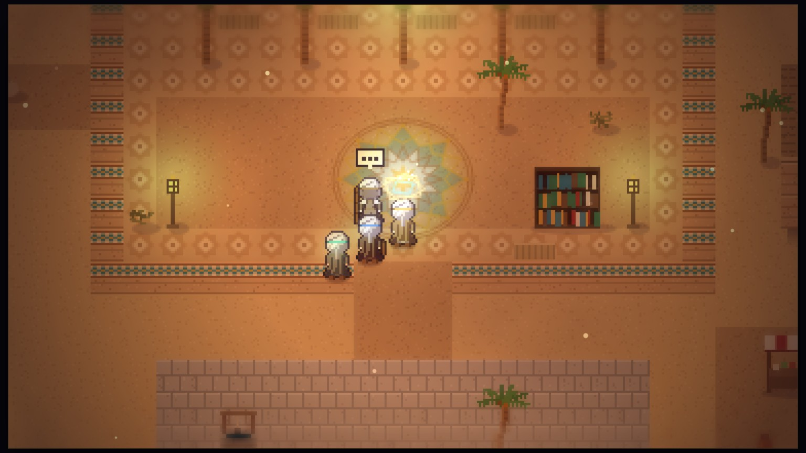
  <div class="gout"><div class="col">
    <div class="ar" lang="ar" dir="rtl">إسناد</div>
    <h1>ISNAD</h1>
    <p class="sous">Chroniques des Compagnons</p>
    <p class="objet">Livret du joueur et planches de présentation</p>
    <p class="quoi">Un jeu de rôle au tour par tour, en pixel art éclairé. Cinq sagas, de la mort du Prophète <span class="pbuh">ﷺ</span> à la fin du califat bien guidé. Dans le navigateur, sans installation.</p>
    <nav class="acces" aria-label="Accès">
      <a class="jouer" href="https://claude.ai/artifact/EwTi1raZJHMCycSjTHL8iB">Jouer</a>
      <a href="#livret">Le livret</a>
      <a href="#planches">Les planches</a>
    </nav>
  </div></div>
</header>

<nav class="sommaire gout" aria-label="Sommaire"><div class="col">
  <ol>
    <li><a href="#en-bref">Le jeu en bref</a></li>
    <li><a href="#commencer">Commencer une partie</a></li>
    <li><a href="#commandes">Les commandes</a></li>
    <li><a href="#sauvegarder">Reprendre, se reposer</a></li>
    <li><a href="#epoques">Trois époques, une chaîne</a></li>
    <li><a href="#sagas">Les cinq sagas</a></li>
    <li><a href="#personnages">Les personnages</a></li>
    <li><a href="#peuples">Tribus, peuples et alliés</a></li>
    <li><a href="#explorer">Explorer, s’orienter aux étoiles</a></li>
    <li><a href="#chaine">La fidélité à la Chaîne</a></li>
    <li><a href="#parole">La parole avant le sabre</a></li>
    <li><a href="#combat">Le combat</a></li>
    <li><a href="#equipement">L’équipement</a></li>
    <li><a href="#piliers">Prière, savoir, piliers</a></li>
    <li><a href="#coeur">Les œuvres et la provision du cœur</a></li>
    <li><a href="#lames">Sept lames, sept maux du cœur</a></li>
    <li><a href="#lumiere">Énigmes du cœur, compagnons de lumière</a></li>
    <li><a href="#batir">Bâtir</a></li>
    <li><a href="#caravanes">Routes et caravanes</a></li>
    <li><a href="#veillees">Les veillées du Caïd</a></li>
    <li><a href="#rencontres">Les rencontres de la Cité-Miroir</a></li>
    <li><a href="#respect">Ce que le jeu s’interdit</a></li>
    <li><a href="#sources">Sources et avertissement</a></li>
    <li><a href="#planches">Planches de présentation</a></li>
  </ol>
</div></nav>

<main id="livret" class="livret gout"><div class="col fil">

  <p class="partie">Pour commencer</p>

  <section class="feuillet" id="en-bref">
    <h2>Le jeu en bref</h2>
    <p>ISNAD est un jeu de rôle au tour par tour qui tient dans un seul fichier et se joue dans un navigateur. Il commence à Médine, en l’an 11 de l’Hégire, le jour de la mort du Prophète <span class="pbuh">ﷺ</span>. On y suit cinq Compagnons, l’un après l’autre, jusqu’à la fin du califat bien guidé. Chacun a sa saga en trois chapitres, sa vertu et ses épreuves.</p>
    <p>L’<span class="terme">isnâd</span> est la chaîne des transmetteurs : la suite des personnes par qui une parole nous est parvenue. Le jeu en fait sa structure. On ne refait pas l’Histoire, on la reçoit, maillon après maillon, et on apprend à dire de qui on la tient.</p>
    <p>On n’y combat jamais des personnes. Les adversaires sont des <span class="terme">égrégores</span> : les idoles que les cœurs fabriquent ensemble, comme le Déni, le Clan, la Rumeur ou le Trône vide. Avant d’en venir là, on parle, on prie, on apprend, on bâtit.</p>
    <dl class="fiche">
      <div><dt>Genre</dt><dd>Jeu de rôle au tour par tour, un joueur</dd></div>
      <div><dt>Contenu</dt><dd>Un prologue, cinq sagas de trois chapitres, cinq veillées, cinq rencontres, un épilogue ; sept lames à forger, sept maux du cœur à trancher</dd></div>
      <div><dt>Support</dt><dd>Navigateur, sur ordinateur ou téléphone. Clavier, souris ou doigt</dd></div>
      <div><dt>Langue</dt><dd>Français</dd></div>
      <div><dt>Image</dt><dd>Pixel art éclairé (rétro-HD), ou 2D simple sur les appareils modestes</dd></div>
      <div><dt>Son</dt><dd>{{PISTES}} pistes originales synthétisées, ambiances et percussions. Aucune voix</dd></div>
    </dl>
  </section>

  <section class="feuillet" id="commencer">
    <h2>Commencer une partie</h2>
    <div class="duo">
      <div>
        <ol>
          <li>Ouvre le jeu et choisis <b>Nouvelle partie</b>.</li>
          <li>Le prologue dure environ cinq minutes. En 2084, dans la Cité-Miroir, Idris descend aux Archives basses et y trouve la Chaîne.</li>
          <li>L’écran de <b>la Chaîne</b> s’ouvre : cinq maillons, cinq témoins. Un grand bouton doré ouvre le premier, celui d’Abû Bakr ; on peut aussi toucher le maillon de son choix. L’ordre est libre, mais la Chaîne se lit du premier au dernier.</li>
          <li>À la fin de chaque saga, une veillée se joue à la Citadelle du Caïd, puis une rencontre dans la Cité-Miroir. On revient ensuite à la Chaîne.</li>
          <li>Quand les cinq Lumières sont réunies, le dernier maillon s’ouvre. C’est celui d’Idris.</li>
        </ol>
        <p>La partie se garde toute seule. Depuis l’écran de la Chaîne, on peut aussi en garder une copie, ouvrir le Recueil ou l’aide, et revenir à l’écran-titre.</p>
      </div>
      <figure class="ecran"></figure>
    </div>
  </section>

  <section class="feuillet" id="commandes">
    <h2>Les commandes</h2>
    <div class="duo">
      <div>
        <div class="tab"><table>
          <thead><tr><th>Action</th><th>Clavier</th><th>Souris ou doigt</th></tr></thead>
          <tbody>
            <tr><td class="n">Se déplacer</td><td><kbd>Flèches</kbd> ou <kbd>ZQSD</kbd> / <kbd>WASD</kbd></td><td>Toucher l’endroit où aller. Doigt maintenu : le héros suit</td></tr>
            <tr><td class="n">Parler, se servir d’une chose</td><td><kbd>Entrée</kbd> ou <kbd>Espace</kbd></td><td>Toucher le personnage, le coffre, la natte, le palmier</td></tr>
            <tr><td class="n">Que faire ?</td><td><kbd>H</kbd></td><td>Bouton <b>?</b></td></tr>
            <tr><td class="n">Carte du lieu</td><td><kbd>C</kbd></td><td>Toucher la mini-carte, ou « Carte » dans la halte</td></tr>
            <tr><td class="n">Menu de halte, retour</td><td><kbd>Échap</kbd> ou <kbd>X</kbd>, <kbd>M</kbd> pour le menu</td><td>Bouton ☰, ou MENU</td></tr>
            <tr><td class="n">Bâtir, à ciel ouvert</td><td><kbd>B</kbd>, puis <kbd>C</kbd> et <kbd>V</kbd> pour changer de pièce</td><td>Bouton ▦, puis toucher la pièce et la case</td></tr>
            <tr><td class="n">Doser la Niyya en combat</td><td><kbd>◂</kbd> <kbd>▸</kbd></td><td>Boutons − et +</td></tr>
          </tbody>
        </table></div>
        <h3>Le bouton ?</h3>
        <p>Quand on ne sait plus quoi faire, le bouton <b>?</b> redit l’objectif, explique comment l’atteindre, donne sa direction en pas et en étoile, et annonce le poids de l’épreuve qui vient. Il peut <b>montrer le chemin</b>, par des points d’or au sol, ou <b>y conduire</b> le héros.</p>
        <h3>Le menu de halte</h3>
        <p>On y trouve le journal du chapitre, puis, rangés par familles : <b>le groupe</b> (compagnons, besace, piliers), <b>le cœur</b> (œuvres et lames, compagnons de lumière), <b>le savoir</b> (Recueil, aide du jeu par thèmes) et les <b>réglages</b> : taille du texte, croix tactile, son, musique, rendu rétro-HD ou 2D simple. Le jeu passe de lui-même en 2D simple s’il peine.</p>
        <figure class="ecran">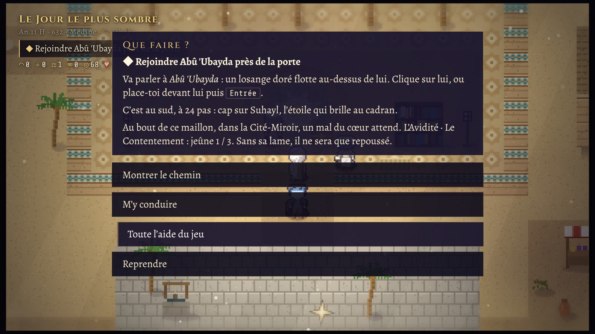<figcaption style="padding:.7em .8em .8em">« Que faire ? » : l’objectif expliqué, sa direction, et deux façons d’y aller.</figcaption></figure>
      </div>
      <figure class="ecran" style="max-width:300px;justify-self:center">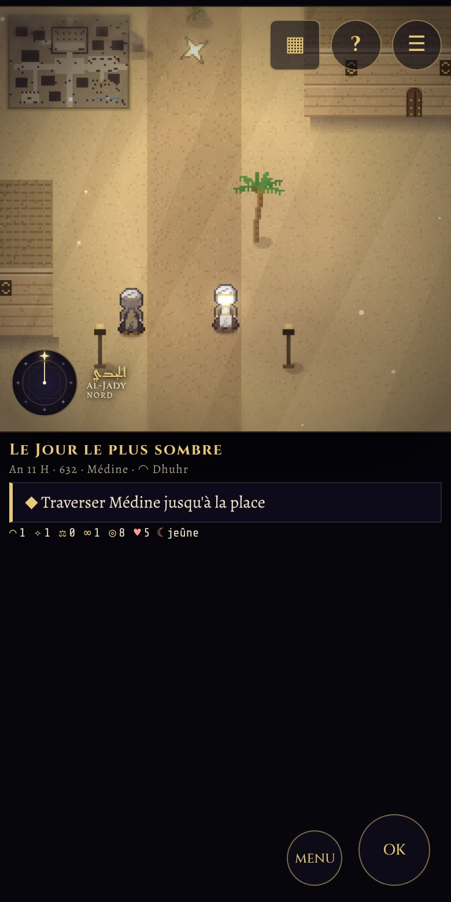<figcaption style="padding:.7em .8em .8em">Sur téléphone, tenu en hauteur : la scène est agrandie, l’objectif se lit dessous, et l’on touche l’endroit où aller.</figcaption></figure>
    </div>
  </section>

  <section class="feuillet" id="sauvegarder">
    <h2>Reprendre, se reposer</h2>
    <div class="duo inv">
      <figure class="ecran"><figcaption style="padding:.7em .8em .8em">La natte, au cœur de l’étoile. On y prie, le groupe s’y repose, on y accomplit les œuvres du jour.</figcaption></figure>
      <div>
        <p><b>La partie se garde toute seule</b> : à chaque objectif atteint, toutes les quelques secondes en promenade, et sur l’écran de la Chaîne. Tu peux fermer la page. « Continuer », sur l’écran-titre, te ramène là où tu étais.</p>
        <p><b>La mosquée est le lieu du repos.</b> Sur la natte tournée vers La Mecque, on prie, et le groupe retrouve toute sa Constance et tout son Souffle. Deux carrés de lumière y tournent en sens contraires et dessinent une étoile à huit branches : c’est le repère.</p>
        <ul>
          <li>Sur la natte, ou depuis l’écran de la Chaîne, on peut en plus garder une copie de la partie : trois emplacements.</li>
          <li>Une mosquée que tu as bâtie devient à son tour un lieu de prière et de repos.</li>
          <li>La partie est gardée dans ce navigateur, sur cet appareil.</li>
        </ul>
        <p class="note"><b>À retenir.</b> Si le jeu se bloquait, recharge la page et choisis « Continuer » : rien n’est perdu.</p>
      </div>
    </div>
  </section>

  <p class="partie">Le monde</p>

  <section class="feuillet" id="epoques">
    <h2>Trois époques, une chaîne</h2>
    <p>Le récit remonte la Chaîne, du présent vers la source.</p>
    <div class="tri">
      <figure><div class="ecran">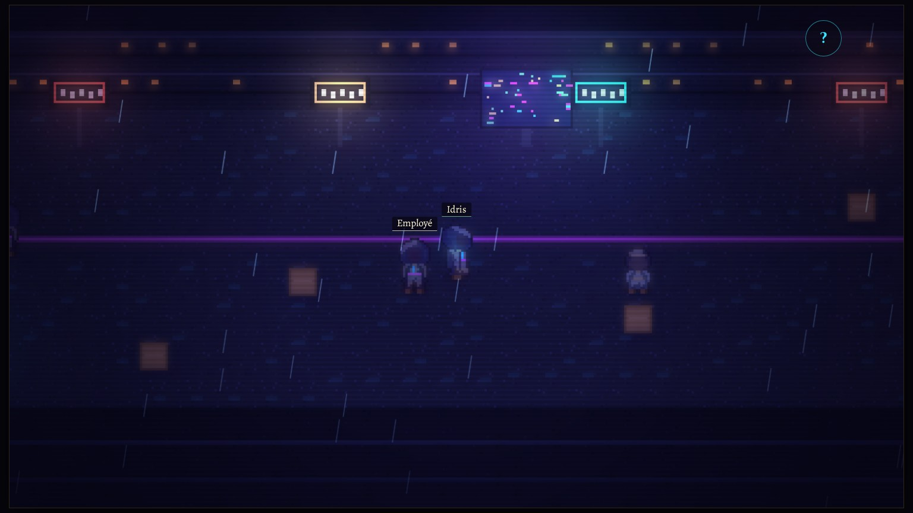</div><figcaption><b style="color:var(--neon);font-weight:400">2084 · LA CITÉ-MIROIR.</b> Idris est un râwî, un transmetteur, dans une ville où une machine, l’AGRÉGOR, donne corps à ce que des millions de regards désirent ensemble. Entre deux maillons, il y rencontre ceux qu’elle a enfermés dans une idole.</figcaption></figure>
      <figure><div class="ecran">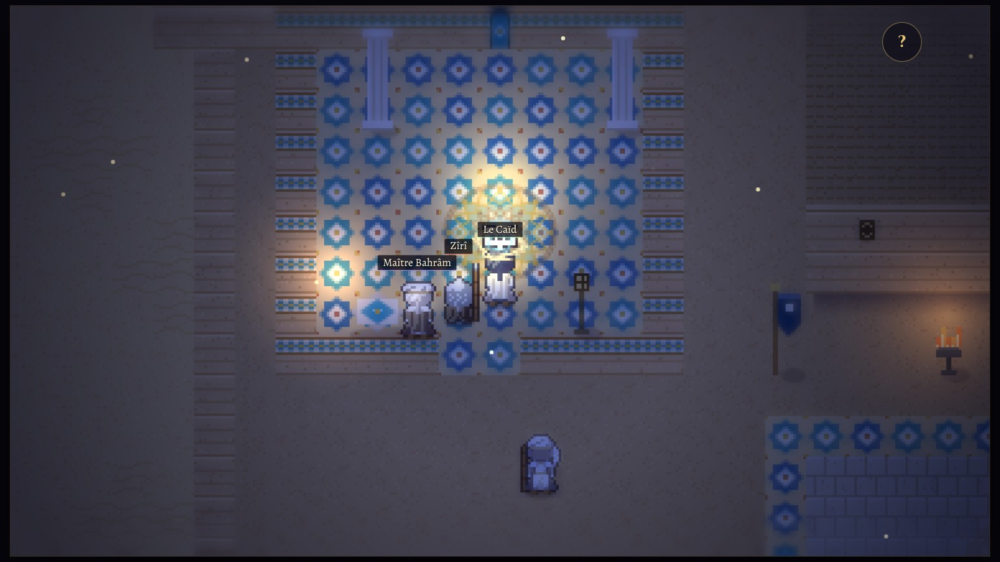</div><figcaption><b style="color:var(--or);font-weight:400">LA CITADELLE.</b> Le Caïd, seigneur berbère, est un maillon de la Chaîne. Ses veillées sont une fiction.</figcaption></figure>
      <figure><div class="ecran"></div><figcaption><b style="color:#ffe08a;font-weight:400">632 – 661 · LES COMPAGNONS.</b> Médine, le désert, le Shâm, la mer, Koufa. Les événements sont ceux que les sources rapportent.</figcaption></figure>
    </div>
    <p style="margin-top:1.4em">Entre ces époques s’ouvre la <span class="terme">noosphère</span> : le lieu, tout en lignes de lumière, où les valeurs partagées et les idoles prennent forme. C’est là que se livrent les combats.</p>
  </section>

  <section class="feuillet" id="sagas">
    <h2>Les cinq sagas</h2>
    <p>Chaque saga se suffit à elle-même. Chacune porte une Lumière, la vertu de son Compagnon, qui rejoint ensuite la Chaîne.</p>
    <div class="sagas">{{SAGAS}}</div>
  </section>

  <section class="feuillet" id="personnages">
    <h2>Les personnages</h2>
    <p>Chaque saga se joue en groupe. Voici ceux que l’on y mène, avec leur rôle, leur Lumière, leurs vertus et l’acte que leur ouvre la Sakîna.</p>
    <p>Personne n’a de visage. On reconnaît chacun à sa silhouette : un turban haut, large ou dont un pan retombe sur l’épaule, une calotte, un casque ; un manteau long, ample, jeté sur une seule épaule, ou pas de manteau du tout ; une robe rayée, une écharpe, un bouclier. Un Compagnon se reconnaît en outre à son voile de lumière. Ce qu’ils éprouvent se lit dans leur attitude : la tête qui s’incline, le bras qui se lève, le genou qui plie.</p>
    <p>En jeu, dès qu’on s’arrête, le nom de ceux qui entourent le héros s’affiche au-dessus d’eux, et la boîte de dialogue montre la silhouette de celui qui parle. Ces tenues sont une convention de dessin : elles ne prétendent pas restituer un costume attesté.</p>
    <figure class="ecran" style="max-width:720px;margin-top:1.4em"><div style="overflow:hidden;aspect-ratio:16/9">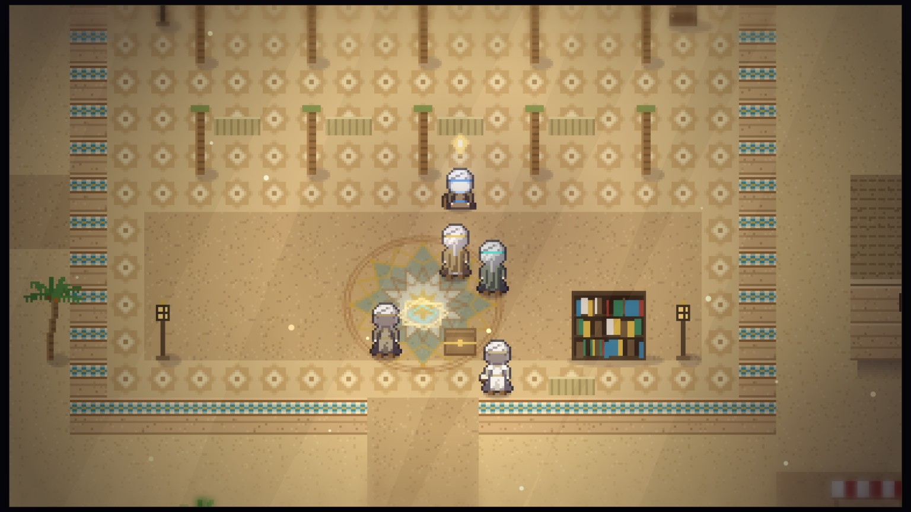</div><figcaption style="padding:.7em .8em .8em">« Mes jambes ne me portèrent plus, et je tombai à terre. » ’Umar ibn al-Khattâb, d’après al-Bukhârî. Dans le jeu, c’est son corps qui le dit.</figcaption></figure>
    {{PERSONNAGES}}
    <div class="troupe"><h3>Gens de rencontre</h3>
      <p>Anciens, savants, marchands, soldats, envoyés : ceux à qui l’on parle en chemin. Aucun groupe n’est un ennemi par nature.</p>
      <div class="gens-l">{{GENS}}</div>
    </div>
  </section>

  <section class="feuillet" id="peuples">
    <h2>Tribus, peuples et alliés</h2>
    <p>Le monde des Compagnons est fait de clans, de tribus, de cités et de deux empires. On leur parle avant tout : délégations, pactes, arbitrages. Aucun groupe n’est un ennemi par nature. Chacun a ses intérêts, et des gens d’honneur.</p>
    <p>Les gens des tribus se reconnaissent à l’étoffe de tête qui retombe sur leurs épaules ; la couleur du cordon dit le clan. Les personnages inventés sont signalés.</p>
    {{PEUPLES}}
  </section>

  <p class="partie">Les systèmes</p>

  <section class="feuillet" id="explorer">
    <h2>Explorer, s’orienter aux étoiles</h2>
    <div class="duo">
      <div>
        <p>L’objectif du moment s’affiche en haut à gauche, précédé d’un losange. On parle aux gens qui portent une bulle, on ouvre les coffres, on récolte en s’adressant aux choses.</p>
        <p>La <b>mini-carte</b>, en haut de l’écran, montre le lieu et ta position. Touche-la, ou ouvre <b>Carte</b> dans la halte (touche <kbd>C</kbd>) : le lieu entier tel qu’on le voit, ta position, l’objectif, la natte, le comptoir et les lieux nommés.</p>
        <figure class="ecran">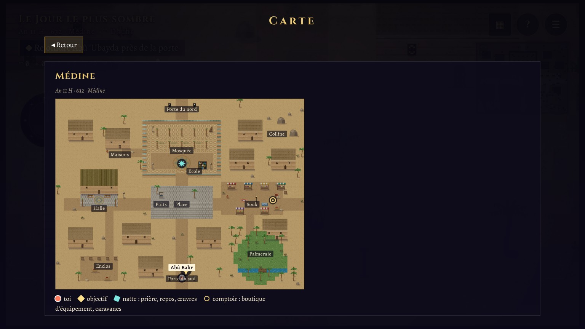<figcaption style="padding:.7em .8em .8em">La carte de la halte : où l’on est, où l’on va.</figcaption></figure>
        <p>On s’oriente au ciel, comme les pilotes du désert. Le cadran montre huit caps, nommés par l’étoile qui s’y lève ou s’y couche. L’étoile qui brille est celle de ton objectif ; au bord de l’écran, elle te précède.</p>
        <div class="tab"><table>
          <thead><tr><th>Cap</th><th>Étoile</th><th></th><th>C’est-à-dire</th></tr></thead>
          <tbody>{{ETOILES}}</tbody>
        </table></div>
      </div>
      <div class="pile">
        <figure class="ecran">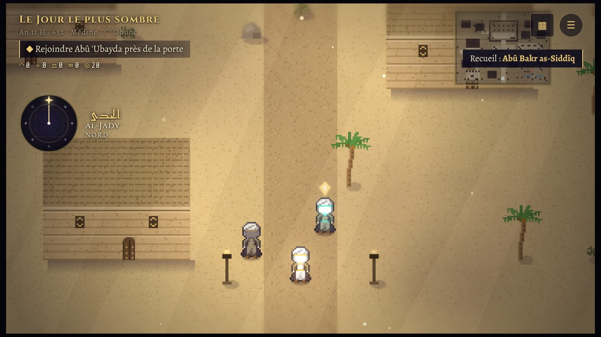</figure>
        <figure class="ecran">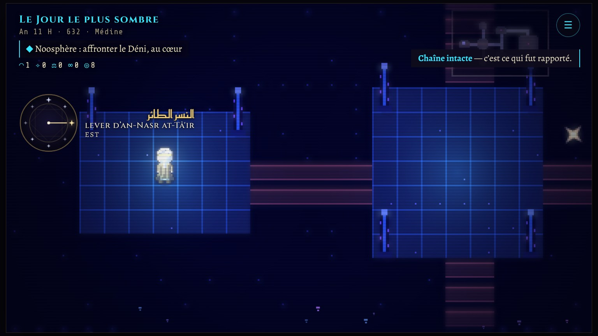<figcaption style="padding:.7em .8em .8em">La noosphère, où attendent les égrégores.</figcaption></figure>
      </div>
    </div>
  </section>

  <section class="feuillet" id="chaine">
    <h2>La fidélité à la Chaîne</h2>
    <div class="duo inv">
      <div class="pile">
        <figure class="ecran"></figure>
        <figure class="ecran"></figure>
      </div>
      <div>
        <p>Aux moments décisifs, plusieurs actes te sont proposés. Un seul est celui que les transmetteurs ont rapporté.</p>
        <p>Te tromper ne change pas l’Histoire. La Chaîne vacille, le jeu explique pourquoi cette réponse n’est pas celle des sources, puis te ramène à ce qui fut. Le compte de tes réponses justes s’affiche sur l’écran de la Chaîne.</p>
        <p>Les paroles attestées apparaissent en carton, avec leur source. Tout le reste du dialogue est une dramatisation.</p>
        <p class="note"><b>Ce qui varie est fictif ou local.</b> L’issue d’un pourparler, un chantier, une caravane peuvent tourner de plusieurs façons. Un fait historique, jamais.</p>
      </div>
    </div>
  </section>

  <section class="feuillet" id="parole">
    <h2>La parole avant le sabre</h2>
    <div class="duo">
      <div>
        <p>Avant d’en venir au combat, on tente un <b>pourparler</b>. Il se joue en plusieurs manches. À chacune, ton interlocuteur parle et tu choisis un argument.</p>
        <ul>
          <li>Chaque argument fait monter ou baisser la <b>confiance</b>. Il faut atteindre le seuil fixé avant la dernière manche.</li>
          <li>Les meilleurs arguments demandent un <b>savoir</b> : une entrée du Recueil apprise d’un savant, d’un feuillet ou d’un témoin. Sans elle, l’argument reste fermé.</li>
          <li>Avoir <b>prié</b> dans le chapitre donne la sérénité : un point de confiance d’avance.</li>
          <li>Une parole qui porte rapporte de la sagesse, comme une victoire.</li>
        </ul>
        <p>Si la parole échoue, le récit continue. Ce qui n’a pas été noué ainsi devra l’être autrement et coûtera davantage.</p>
      </div>
      <figure class="ecran">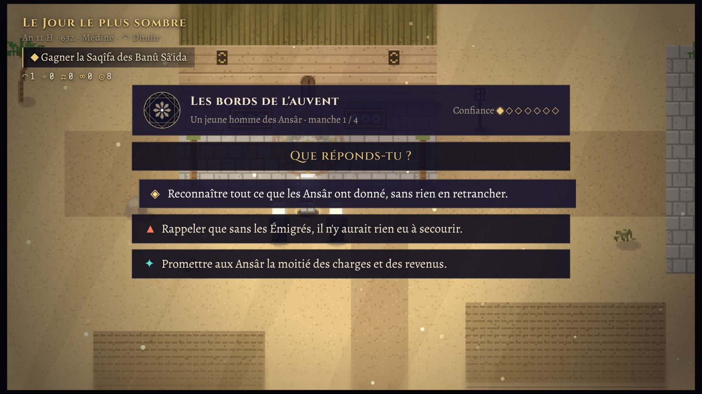<figcaption style="padding:.7em .8em .8em">Pourparler « Les bords de l’auvent », manche 1 sur 4.</figcaption></figure>
    </div>
    <h3>Les idées noires</h3>
    <div class="duo inv">
      <figure class="ecran">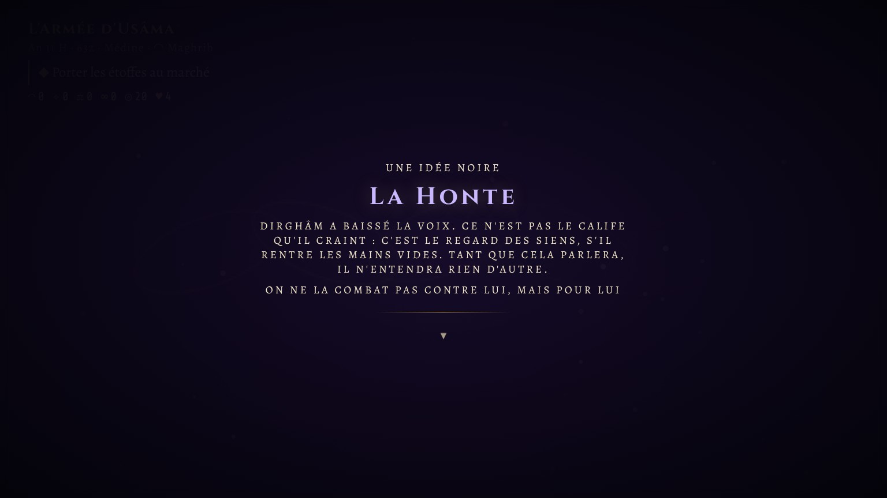<figcaption style="padding:.7em .8em .8em">Au milieu d’un pourparler : ce n’est plus l’homme qui répond, c’est sa honte.</figcaption></figure>
      <div>
        <p>Pour convaincre quelqu’un, il faut parfois dissiper d’abord ce qui parle à sa place. Dans certains pourparlers, à la deuxième manche, une <b>idée noire</b> couvre ta voix : la honte, la peur, le soupçon, la rancune ou le désespoir.</p>
        <p>Dans la noosphère, elle a un corps, et l’on peut le dissiper. On ne la combat pas contre l’homme, mais pour lui. Après quoi il écoute, et la confiance monte d’un point.</p>
        <div class="noires">{{NOIRES}}</div>
        <p class="note">Une idée noire ne s’attache qu’à un personnage de fiction : jamais à un personnage historique.</p>
      </div>
    </div>
  </section>

  <section class="feuillet" id="combat">
    <h2>Le combat</h2>
    <div class="duo inv">
      <figure class="ecran"><figcaption style="padding:.7em .8em .8em">En haut, l’ordre des tours. En bas, Constance, Souffle, Niyya et Sakîna de chacun.</figcaption></figure>
      <div>
        <p>Le combat se joue au tour par tour, et l’ordre des prochains tours est toujours visible. Chaque Compagnon a sa <b>Constance</b> (ce qu’il peut endurer) et son <b>Souffle</b> (ce que coûtent ses vertus). Un compagnon à bout est <span class="terme">éprouvé</span>.</p>
        <h3>Voiles et failles</h3>
        <p>Chaque égrégore est protégé par des <b>voiles</b>. Frappe-le avec la vertu qui est sa <b>faille</b> pour en retirer un. À zéro, il est <span class="terme">dévoilé</span> : il perd son tour et subit bien plus. Ses failles se découvrent en essayant, ou d’emblée si le Savoir du règne est élevé.</p>
      </div>
    </div>
    <h3>Le Fer et les six Lumières</h3>
    <p>Le <b>Fer</b> (Hadîd) est l’élan physique : il frappe, mais certaines idoles y sont insensibles. Les six <b>Lumières</b> sont les vertus des Compagnons. Chaque égrégore craint certaines d’entre elles.</p>
    <div class="lumieres">{{LUMIERES}}</div>
    <div class="duo">
      <div>
        <h3>Les commandes</h3>
        <div class="tab"><table><tbody>
          <tr><td class="n">Frapper</td><td>Un coup de Fer. Gratuit.</td></tr>
          <tr><td class="n">Éclairer</td><td>Un coup porté avec la Lumière du Compagnon. Gratuit.</td></tr>
          <tr><td class="n">Vertus</td><td>Les actes propres à chacun : frapper fort, soigner, protéger, révéler une faille. Ils coûtent du Souffle.</td></tr>
          <tr><td class="n">Objets</td><td>Ce que contient la Besace.</td></tr>
          <tr><td class="n">Garde</td><td>Encaisser, et gagner de la Niyya et de la Sakîna.</td></tr>
        </tbody></table></div>
      </div>
      <div>
        <h3>Niyya et Sakîna</h3>
        <p>La <b>Niyya</b>, l’intention, monte d’un point par tour, jusqu’à cinq. Dépenses-en jusqu’à trois d’un coup pour multiplier les coups de Fer ou renforcer une vertu.</p>
        <p>La <b>Sakîna</b> est la jauge dorée. Elle monte quand on endure, quand on touche une faille, quand on dévoile. Pleine, elle ouvre l’acte ultime du Compagnon.</p>
        <p>Si tout le groupe est éprouvé, la chaîne ne rompt pas : le combat reprend, le groupe reposé.</p>
      </div>
    </div>
    <h3>La Besace</h3>
    <div class="tab"><table><tbody>{{OBJETS}}</tbody></table></div>
  </section>

  <section class="feuillet" id="equipement">
    <h2>L’équipement</h2>
    <div class="duo">
      <figure class="ecran">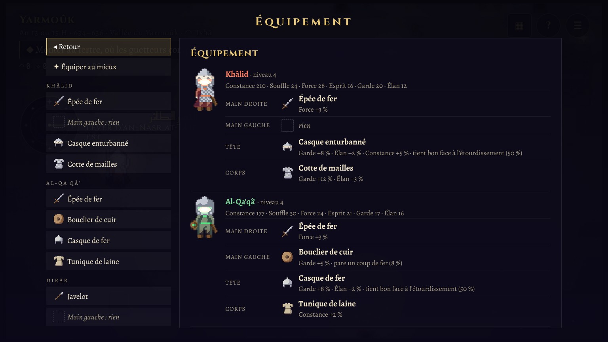<figcaption style="padding:.7em .8em .8em">Dans la halte : quatre emplacements par compagnon, et la réserve commune.</figcaption></figure>
      <div>
        <p>Chaque compagnon a quatre emplacements : <b>main droite</b>, <b>main gauche</b>, <b>tête</b> et <b>corps</b>. {{NPIECES}} pièces se partagent entre eux, et chaque rôle a les siennes : un sage ne porte pas de cotte de mailles, un guerrier n’a que faire d’un calame.</p>
        <p>Les pièces viennent des <b>coffres</b>, des <b>victoires</b> (toujours après une idole, parfois après un combat ordinaire) et de la <b>boutique d’équipement</b>, au comptoir. Elles vont dans une <b>réserve</b> commune à toute la Chaîne : à la fin d’un maillon, ce que le groupe portait y retourne, et le groupe suivant s’en sert.</p>
        <p>Quand une pièce arrive, le jeu demande aussitôt qui la porte. Dans la halte, <b>Au mieux</b> habille tout le groupe d’un geste.</p>
      </div>
    </div>
    <div class="duo inv" style="margin-top:2.6em">
      <figure class="ecran">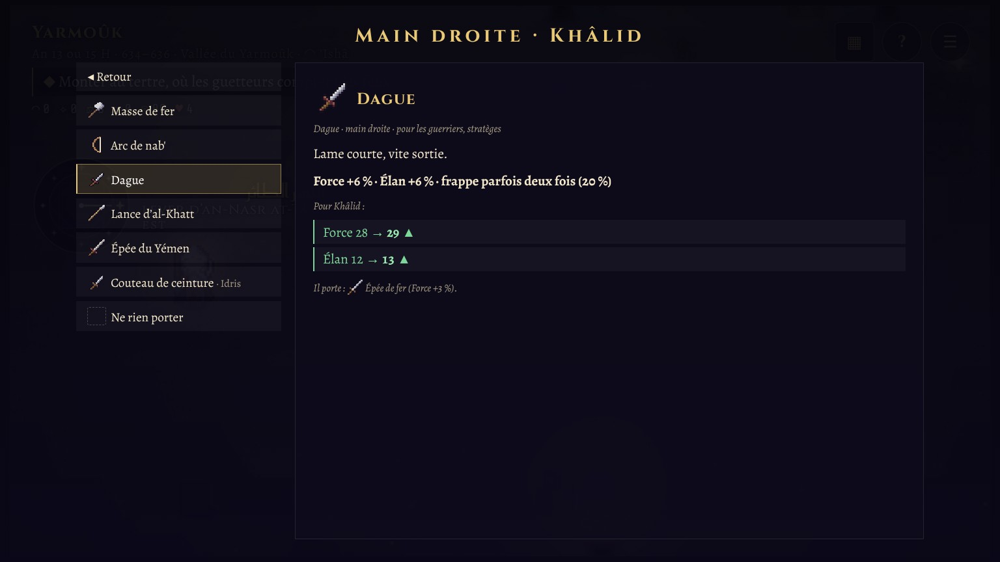<figcaption style="padding:.7em .8em .8em">Avant de choisir, on voit ce que la pièce change, chiffre par chiffre.</figcaption></figure>
      <div>
        <h3>Chaque famille a son caractère</h3>
        <div class="tab"><table><tbody>
          <tr><td class="n">Épée</td><td>La Force la plus sûre.</td></tr>
          <tr><td class="n">Lance</td><td>Perce une part de la Garde adverse.</td></tr>
          <tr><td class="n">Arc</td><td>Tire le premier : qui le porte agit plus tôt au début du combat.</td></tr>
          <tr><td class="n">Dague</td><td>Vive : elle frappe parfois deux fois.</td></tr>
          <tr><td class="n">Masse</td><td>Lourde : elle peut étourdir.</td></tr>
          <tr><td class="n">Bâton, calame</td><td>Le bâton soutient le Souffle ; le calame nourrit l’Esprit.</td></tr>
          <tr><td class="n">Bouclier</td><td>Pare parfois un coup de fer, qui ne fait alors que la moitié de son mal.</td></tr>
          <tr><td class="n">Casque</td><td>Aide à tenir bon face à l’étourdissement.</td></tr>
          <tr><td class="n">Armure</td><td>Le fer protège, et il ralentit.</td></tr>
        </tbody></table></div>
      </div>
    </div>
    <h3>On voit ce que l’on porte</h3>
    <div class="duo">
      <figure class="ecran">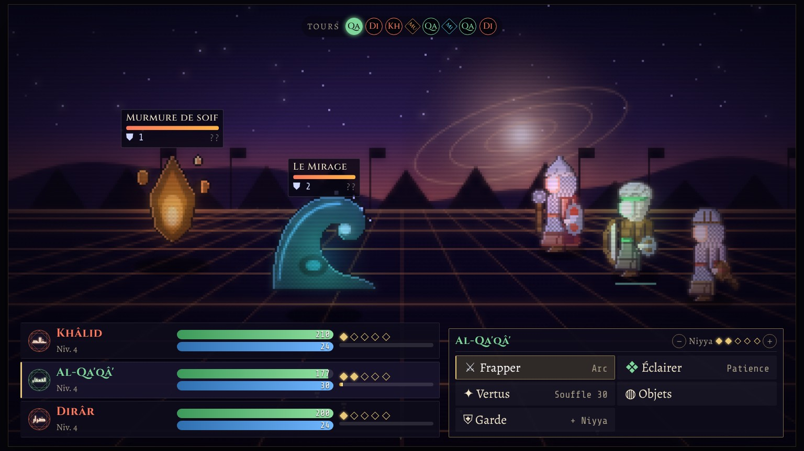<figcaption style="padding:.7em .8em .8em">En combat, chacun porte ce qu’on lui a donné.</figcaption></figure>
      <div>
        <p>En combat et dans la halte, la silhouette montre l’arme, le bouclier, le casque et l’armure. Les étoffes ne changent pas le dessin : chacun garde la coiffe et le manteau qui le font reconnaître. Dans le récit, personne ne change de silhouette.</p>
        <div class="tenues">{{TENUES}}</div>
      </div>
    </div>
    <div class="duo" style="margin-top:2.6em">
      <figure class="ecran">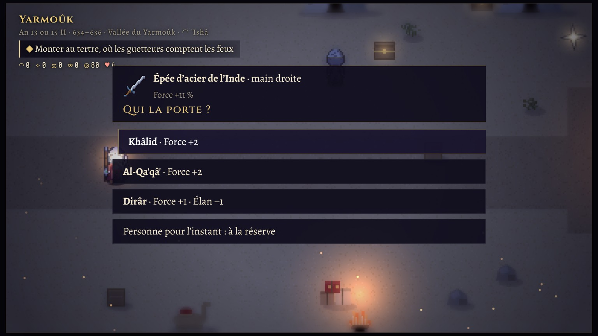<figcaption style="padding:.7em .8em .8em">Une pièce arrive : le jeu demande aussitôt qui la porte.</figcaption></figure>
      <figure class="ecran"><figcaption style="padding:.7em .8em .8em">À la boutique : le prix, l’effet, et à qui la pièce irait mieux.</figcaption></figure>
    </div>
    <h3>La boutique d’équipement, lieu par lieu</h3>
    <p>Au comptoir, la boutique vend ce que l’on fabrique sur place ou ce qui passe par là : de 8 à 85 dirhams, et la revente rend la moitié. Chaque victoire rapporte quelques dirhams. La bourse est la même que pour l’aumône : il faut choisir.</p>
    <div class="tab"><table class="etals"><tbody>{{ARTISANS}}</tbody></table></div>
    {{EQUIPEMENT}}
    <p class="note">Ce sont des objets ordinaires de l’époque : une <b>convention de jeu</b>, sans relique ni inscription. Leurs noms viennent du vocabulaire des poètes anciens ; le jeu ne dit pas qui portait quoi, et le fer ne remplace jamais la provision du cœur.</p>
  </section>

  <section class="feuillet" id="piliers">
    <h2>Prière, savoir, piliers</h2>
    <div class="duo">
      <div>
        <p>La <b>prière</b> n’est pas un sortilège. Elle se place aux moments que les sources attestent et aux haltes naturelles du récit, à l’un de ses cinq moments : Fajr, Dhuhr, ’Asr, Maghrib, ’Ishâ. Sur une natte, le groupe se repose et la Sakîna descend.</p>
        <p>Le <b>savoir</b> se recueille en chemin, auprès des savants, dans les feuillets, de la bouche des témoins. Tout va au <b>Recueil</b> : biographies, événements, lieux, paroles avec leur source, idoles de la noosphère. Ce qu’on y a appris ouvre des arguments dans les pourparlers.</p>
        <h3>Ce que le règne a bâti</h3>
        <p>Quatre piliers, de zéro à cinq, mesurent chaque saga. Ils montent par la prière tenue, le savoir appris, la justice rendue et les pactes noués. Ils descendent quand la parole échoue.</p>
      </div>
      <div class="pile">
        <figure class="ecran"></figure>
        <figure class="ecran">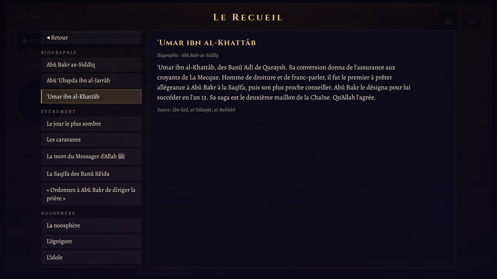</figure>
      </div>
    </div>
    <div class="tab"><table>
      <thead><tr><th>Pilier</th><th>Il monte quand</th><th>Effet, par niveau</th></tr></thead>
      <tbody>
        <tr><td class="n"><span class="gl">◠</span>Prière</td><td>On prie aux haltes du récit</td><td>+6 de Sakîna au début de chaque combat</td></tr>
        <tr><td class="n"><span class="gl">✧</span>Savoir</td><td>On apprend : un niveau toutes les six entrées du Recueil</td><td>Une faille révélée d’emblée chez chaque égrégore, tous les deux niveaux</td></tr>
        <tr><td class="n"><span class="gl">⚖</span>Justice</td><td>On rend à chacun son dû</td><td>3 % de dégâts reçus en moins. Routes plus sûres</td></tr>
        <tr><td class="n"><span class="gl">∞</span>Lien</td><td>On noue des pactes, on gagne des alliés</td><td>3 % de dégâts infligés en plus. Renforts sur les routes</td></tr>
      </tbody>
    </table></div>
  </section>

  <section class="feuillet" id="coeur">
    <h2>Les œuvres et la provision du cœur</h2>
    <div class="duo">
      <div>
        <p>Plus une épreuve est lourde, plus il faut s’y préparer. Sur la natte d’une mosquée, après la prière, on accomplit les <b>œuvres du jour</b> : le dhikr, l’étude du Coran, le jeûne, l’aumône, la visite. Trois par chapitre au plus, la prière en sus.</p>
        <p>Chacune ajoute un point à la <b>provision du cœur</b> (♥, cinq au plus). Une idole en consomme deux, un mal du cœur trois. Qui s’y présente sans provision combat <b>le cœur lourd</b> : chaque point qui manque retire 8 % aux coups portés et ajoute 8 % aux coups reçus. Rien ne bloque pour autant : le poids s’allège à chaque reprise.</p>
        <p>Chaque œuvre a son prix. Un jour de <b>jeûne</b>, les vivres de la besace attendent le soir. L’<b>aumône</b> coûte douze dirhams. Le <b>pèlerinage</b> n’est proposé que dans les veillées, quand la caravane passe, et s’accomplit à la fin de la veillée.</p>
        <p class="note"><b>Ce ne sont pas des sortilèges.</b> Le jeu ne promet aucun pouvoir : il traduit à sa façon ce que ces œuvres font au cœur. Les textes les décrivent sobrement, sans formule ni parole inventée.</p>
      </div>
      <div class="pile">
        <figure class="ecran"><figcaption style="padding:.7em .8em .8em">Les œuvres du jour. À droite de chacune, la lame qu’elle forge.</figcaption></figure>
        <figure class="ecran">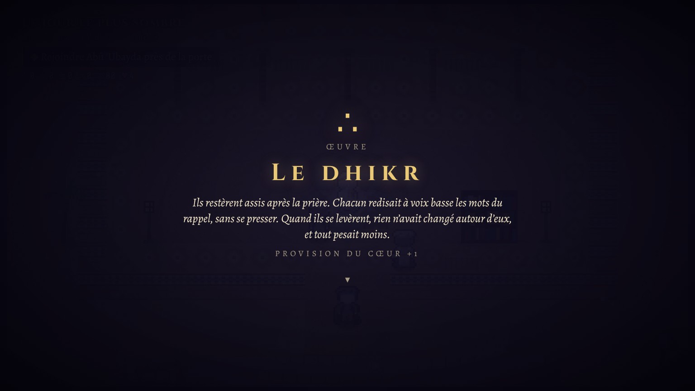</figure>
      </div>
    </div>
    <div class="tab"><table>
      <thead><tr><th>Œuvre</th><th>Ce qu’elle est dans le jeu</th><th>La lame qu’elle forge</th></tr></thead>
      <tbody>{{OEUVRES}}</tbody>
    </table></div>
  </section>

  <section class="feuillet" id="lames">
    <h2>Sept lames, sept maux du cœur</h2>
    <div class="duo inv">
      <div class="pile">
        <figure class="ecran"><figcaption style="padding:.7em .8em .8em">La troisième aumône forge la Largesse.</figcaption></figure>
        <figure class="ecran">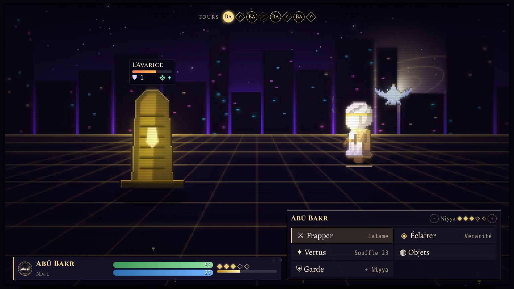<figcaption style="padding:.7em .8em .8em">Devant sa lame, le mal n’a plus qu’un voile et toutes ses failles sont connues.</figcaption></figure>
      </div>
      <div>
        <p>Derrière les idoles se tiennent <b>sept maux du cœur</b> : l’avidité, l’orgueil, l’ostentation, l’avarice, l’insouciance, l’envie, la colère. Ce sont les derniers adversaires du jeu. Cinq se dressent à la fin des rencontres de la Cité-Miroir ; tous ceux qui restent attendent devant le cœur de l’Agrégor.</p>
        <p>Dans la noosphère, une vertu longuement pratiquée prend le fil d’une <b>lame</b>. Trois fois la même œuvre forgent la lame du mal contraire ; un seul pèlerinage forge l’Humilité.</p>
        <ul>
          <li><b>Avec sa lame</b>, le mal perd ses voiles et il est <b>tranché</b> : il ne revient pas.</li>
          <li><b>Sans elle</b>, il est seulement <b>repoussé</b>, au prix d’un vrai combat, et revient au dernier chapitre.</li>
        </ul>
        <p>La Chaîne rappelle, sous chaque maillon, le mal qui attend au bout et où en est sa lame. La page « Œuvres et lames » de la halte tient le compte.</p>
        <p class="note">Ces lames sont une image : ni reliques, ni épées d’un personnage historique. La liste de sept est un choix du jeu ; les traités de morale décrivent davantage de maux, et les rangent autrement.</p>
      </div>
    </div>
    <div class="lames-g">{{LAMES}}</div>
  </section>

  <section class="feuillet" id="lumiere">
    <h2>Énigmes du cœur, compagnons de lumière</h2>
    <div class="duo">
      <div>
        <h3 style="margin-top:0">Les énigmes du cœur</h3>
        <p>Dans les veillées de la Citadelle, il arrive qu’un compagnon languisse sans fièvre ni blessure. Il tient moins bien au combat, et aucun remède n’y fait. Les anciens demandaient : « Qu’a-t-il cessé de faire ? »</p>
        <p>À toi de trouver. Les gens de la Citadelle donnent des indices ; l’œuvre juste, accomplie sur la natte, le remet debout. Trois énigmes attendent, dans trois veillées.</p>
        <p class="note">Ce n’est pas une punition : c’est un poids, et il se pose en reprenant ce qu’on avait laissé. Une énigme ne touche jamais qu’un personnage de fiction.</p>
      </div>
      <figure class="ecran">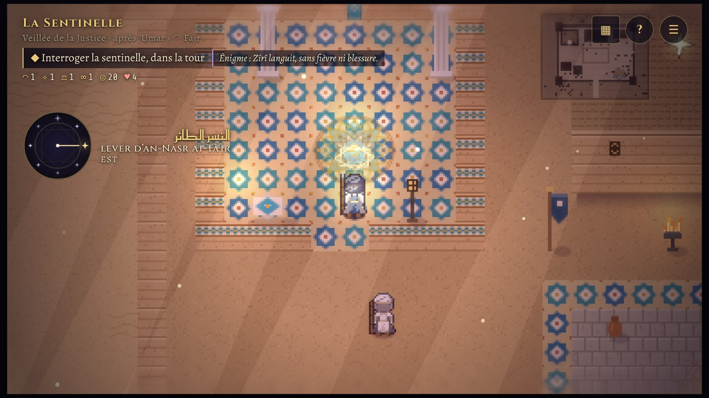<figcaption style="padding:.7em .8em .8em">L’énigme en cours se lit sous l’objectif.</figcaption></figure>
    </div>
    <h3>Les compagnons de lumière</h3>
    <p>Les Arabes donnaient aux étoiles des noms de bêtes. Dans la noosphère, ces noms ont pris corps : cinq figures du ciel rejoignent celui qui les a méritées. Une seule accompagne le groupe au combat ; on la choisit dans la halte.</p>
    <div class="betes-g">{{BETES}}</div>
    <p class="note">Ce sont des figures de fiction, dessinées en silhouettes de lumière. Aucune n’accompagne un Compagnon dans le récit historique.</p>
  </section>

  <section class="feuillet" id="batir">
    <h2>Bâtir</h2>
    <div class="duo">
      <div>
        <p>À ciel ouvert, la touche <kbd>B</kbd> ou le bouton ▦ ouvre le mode bâtir. On pose devant soi, case par case. Ce qui est bâti reste et rapporte à chaque chapitre.</p>
        <h3>Récolter</h3>
        <p>On récolte en s’adressant aux choses. Un palmier donne de la <b>palme</b>, un rocher de la <b>pierre</b>, un puits ou une rive de l’<b>eau</b>, et l’eau pétrie donne du <b>pisé</b>. Le <b>grain</b> vient des champs, la <b>laine</b> des moutons. Le comptoir des caravanes vend le reste.</p>
        <h3>Quelques règles</h3>
        <ul>
          <li>Palmiers, champs et troupeaux veulent de l’eau à moins de six pas.</li>
          <li>Un puits et trois palmiers font une oasis.</li>
          <li>Six segments de tranchée gardent un lieu : les égrégores qui rôdent ne la franchissent pas.</li>
          <li>On ne peut pas s’emmurer ni barrer un passage.</li>
        </ul>
      </div>
      <figure class="ecran">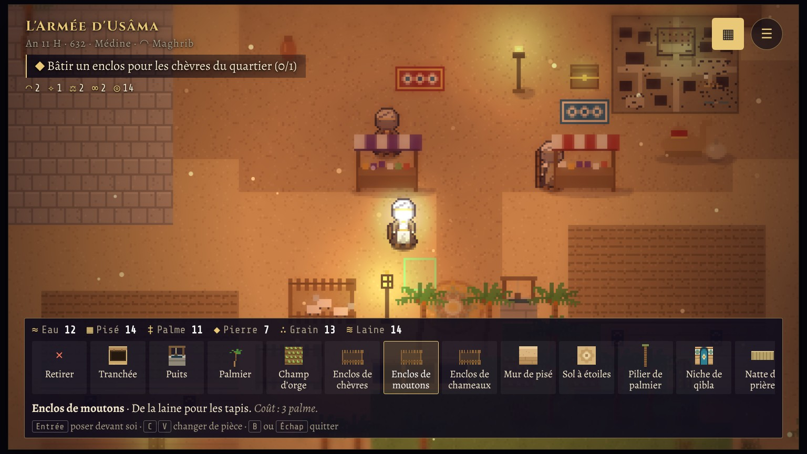<figcaption style="padding:.7em .8em .8em">La barre du bâtisseur : matériaux en haut, pièces au milieu, coût en bas.</figcaption></figure>
    </div>
    <div class="tab"><table>
      <thead><tr><th>Pièce</th><th>Coût</th><th>À quoi elle sert</th></tr></thead>
      <tbody>{{PIECES}}</tbody>
    </table></div>
    <div class="duo inv">
      <figure class="ecran"></figure>
      <div>
        <h3>Fonder une mosquée</h3>
        <p>Sur une terre gagnée, un chantier s’ouvre, tracé au sol. Les matériaux sont livrés. Il faut monter l’enceinte en pisé, daller le sol, dresser les piliers de palmier, placer la niche de qibla et poser la natte.</p>
        <p>La mosquée achevée devient un lieu de prière et de repos. Dans la saga d’Abû Bakr, c’est celle de Dhû l-Qassa.</p>
      </div>
    </div>
  </section>

  <section class="feuillet" id="caravanes">
    <h2>Routes et caravanes</h2>
    <div class="duo">
      <div>
        <p>Aux ballots du souk ou du camp se tient le <b>comptoir des caravanes</b>. On y vend ce que rapportent les troupeaux et les champs, on y achète des matériaux et des vivres, et l’on peut confier une cargaison à une caravane. On commence avec vingt dirhams.</p>
        <div class="tab"><table>
          <thead><tr><th>Route</th><th>Mise</th><th>Retour espéré</th><th>Péril</th></tr></thead>
          <tbody>
            <tr><td class="n">Le Yémen, par la route d’hiver</td><td>12</td><td>19</td><td>18 %</td></tr>
            <tr><td class="n">Le Shâm, par la route d’été, jusqu’à Bosra</td><td>20</td><td>35</td><td>30 %</td></tr>
            <tr><td class="n">Le Bahreïn et les confins de l’Irak</td><td>30</td><td>58</td><td>45 %</td></tr>
          </tbody>
        </table></div>
        <p>La caravane revient au chapitre suivant avec son gain, ou bien des hommes rentrent à pied. Une route est plus sûre quand la justice est rendue (3 % de péril en moins par niveau), que des pactes sont noués (2 % par niveau de Lien) et que des méharistes la gardent (6 % par enclos de chameaux).</p>
        <h3>Quand une route est pillée</h3>
        <ol>
          <li>On lève des renforts : alliés liés par un pacte, méharistes.</li>
          <li>On parle d’abord au chef des pillards.</li>
          <li>On ne se bat qu’en dernier recours, et contre les égrégores de la razzia.</li>
          <li>On rend à chacun ce qui lui revient, et les pillards sont remis au juge.</li>
        </ol>
      </div>
      <div class="pile">
        <figure class="ecran"></figure>
        <figure class="ecran">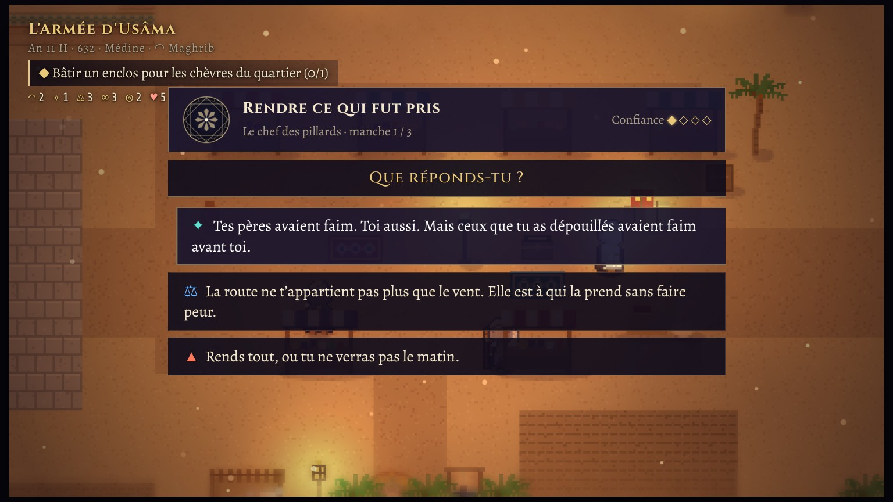</figure>
      </div>
    </div>
  </section>

  <section class="feuillet" id="veillees">
    <h2>Les veillées du Caïd</h2>
    <div class="duo inv">
      <figure class="ecran">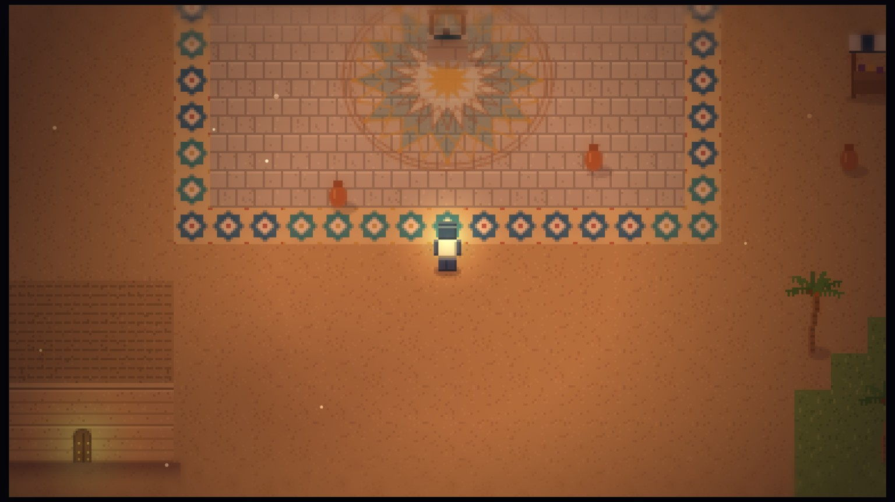</figure>
      <div>
        <p>Après chaque saga, on passe une veillée à la Citadelle. Le Caïd y affronte, à l’échelle de ses murs, la question que le Compagnon vient de trancher. Il est accompagné de Maître Bahrâm, le géomètre, et de Zîrî, capitaine des sentinelles.</p>
        <div class="tab"><table><tbody>{{VEILLEES}}</tbody></table></div>
        <p>Ces veillées sont une fiction : le Caïd, sa citadelle et ses gens n’ont jamais existé.</p>
      </div>
    </div>
  </section>

  <section class="feuillet" id="rencontres">
    <h2>Les rencontres de la Cité-Miroir</h2>
    <div class="duo">
      <div>
        <p>Après chaque saga et sa veillée, Idris remonte dans la rue. Un enfant l’y attend chaque soir, sous le grand écran, avec une question. Il le mène vers quelqu’un que la ville a enfermé dans une idole.</p>
        <p>On le dénoue par la parole. Les meilleurs arguments sont ceux qu’Idris vient d’apprendre : un savoir du Compagnon, un savoir de la Citadelle. Sans eux, on peut encore convaincre, mais de justesse.</p>
        <p>Au milieu de l’échange, son idole parle à sa place : c’est son idée noire, et il faut la dissiper pour qu’il entende. Chaque ami gagné revient prêter main-forte au dernier maillon.</p>
        <p>Puis ce qui se tenait derrière l’idole se dresse : un <b>mal du cœur</b>. On le tranche si l’on a forgé sa lame ; sinon on le repousse, et il reviendra.</p>
        <p>Puis on retourne auprès de l’enfant, et on lui dit de qui on tient ce qu’on a appris. C’est le métier d’Idris.</p>
      </div>
      <div class="pile">
        <figure class="ecran"><div style="overflow:hidden;aspect-ratio:16/9">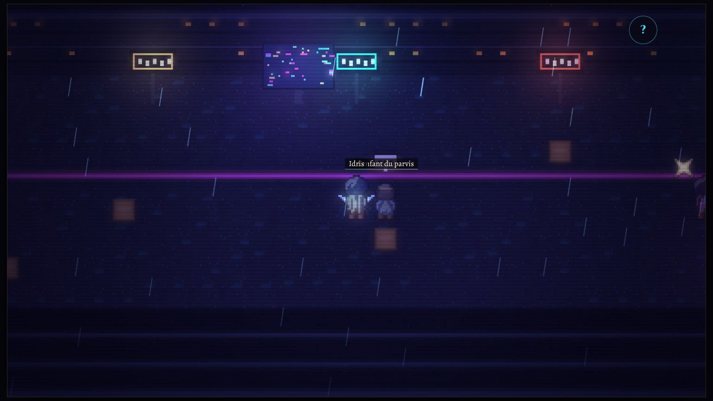</div><figcaption style="padding:.7em .8em .8em">L’enfant du parvis, chaque soir sous le grand écran.</figcaption></figure>
        <figure class="ecran">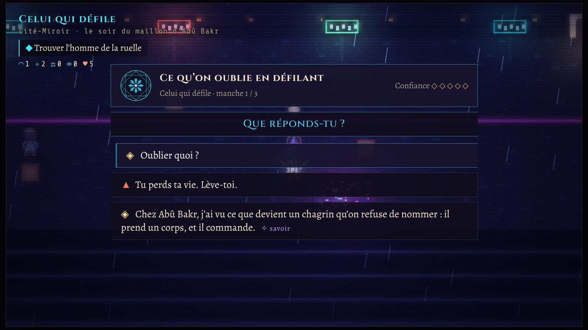<figcaption style="padding:.7em .8em .8em">La mention « ✧ savoir » signale un argument ouvert par un savoir du Recueil.</figcaption></figure>
      </div>
    </div>
    <div class="tab"><table>
      <thead><tr><th>Rencontre</th><th>Après</th><th>Ce qui le retient</th><th>Savoirs qui ouvrent un argument</th><th>Le mal derrière, et sa lame</th></tr></thead>
      <tbody>{{RENCONTRES}}</tbody>
    </table></div>
    <p>Ces rencontres sont une fiction.</p>
  </section>

  <p class="partie">Repères</p>

  <section class="feuillet" id="respect">
    <h2>Ce que le jeu s’interdit</h2>
    <p>Le sujet est religieux et historique. L’exactitude et le respect passent avant le jeu.</p>
    <ul class="engage">
      <li><b>Le Prophète <span class="pbuh">ﷺ</span> n’apparaît jamais.</b> Ni image, ni silhouette, ni réplique. On l’évoque seulement.</li>
      <li><b>Personne n’a de visage.</b> Ni yeux, ni bouche, ni trait. Les Compagnons portent un voile de lumière ; l’émotion se lit dans le corps.</li>
      <li><b>Seulement des événements attestés.</b> Une parole citée porte sa source. En cas de doute, on écrit « On rapporte ».</li>
      <li><b>Aucun ennemi n’est une personne.</b> Ni un peuple, ni une religion. On n’affronte que des égrégores abstraits.</li>
      <li><b>Aucun groupe n’est ennemi par nature.</b> Perses, juifs, chrétiens, tribus : des acteurs aux intérêts légitimes, avec des gens d’honneur chez chacun.</li>
      <li><b>Aucune polémique confessionnelle.</b> Les dissensions entre Compagnons sont évoquées avec retenue, sans désigner de coupable.</li>
      <li><b>Les versets</b> ne sont donnés qu’en traduction du sens, avec leur référence.</li>
      <li><b>Aucune voix.</b> Ni récitation, ni appel à la prière synthétisé. Le nom divin ne figure sur rien que l’on frappe.</li>
      <li><b>La prière n’est pas un pouvoir.</b> Elle s’écrit sobrement, aux moments attestés et aux haltes du récit.</li>
      <li><b>Les œuvres ne sont pas des sortilèges.</b> Dhikr, étude, jeûne, aumône, visite, pèlerinage : décrits sobrement. Le jeu n’en tire qu’une provision du cœur.</li>
      <li><b>Lames, maux et figures du ciel sont des images.</b> Ni relique, ni épée d’un personnage historique. Une idée noire, une énigme ne touchent que des personnages de fiction.</li>
      <li><b>L’équipement est fait d’objets ordinaires.</b> Ni relique, ni inscription, ni or ni soie, ni vertu prêtée à un objet. Le jeu ne dit pas qui portait quoi ; dans le récit, personne ne change de silhouette.</li>
    </ul>
  </section>

  <section class="feuillet" id="sources">
    <h2>Sources et avertissement</h2>
    <p>Cette œuvre est une fiction interactive inspirée de sources historiques. Les dialogues sont une dramatisation ; seules les paroles présentées en carton, avec leur source, sont des citations rapportées.</p>
    <p><b>Sources principales.</b> Ibn Hishâm, <i>as-Sîra an-Nabawiyya</i> · at-Tabarî, <i>Târîkh ar-Rusul wa-l-Mulûk</i> · Ibn Sa’d, <i>at-Tabaqât al-Kubrâ</i> · Ibn Kathîr, <i>al-Bidâya wa-n-Nihâya</i> · al-Bukhârî et Muslim, <i>as-Sahîh</i> · Ibn ’Asâkir, <i>Târîkh Dimashq</i>.</p>
    <p><b>Noosphère et égrégore.</b> « Noosphère » vient de Vernadsky et de Teilhard de Chardin ; « égrégore » désigne une forme-pensée collective. Le jeu s’en sert comme d’une image pour parler des valeurs partagées et des idoles que les hommes se fabriquent.</p>
    <p>Qu’Allah agrée les Compagnons. Toute erreur est celle des auteurs ; vérifiez auprès des savants et des sources.</p>
    <p class="note"><b>État du projet.</b> Version de travail. La relecture historique et religieuse par un spécialiste reste à faire.</p>
  </section>

</div></main>

<section class="table" id="planches"><div class="gout"><div class="col">
  <h2>Planches de présentation</h2>
  <p class="chapo">Dix planches pour présenter le jeu. Tout ce qu’elles montrent vient du jeu lui-même : écrans capturés en jouant, personnages et idoles dessinés par le moteur. Chacune existe aussi en image, prête à publier.</p>

  <div class="cartel"><b>Planche 1 · Affiche</b><span>16:9 · 1920 × 1080</span></div>
  <div class="defile"><div class="pw"><article class="pl p-affiche" data-nom="01-affiche">
    
    <div class="ombre"></div>
    <div class="in">
      <div class="ar nom" lang="ar" dir="rtl" style="text-align:left">إسناد</div>
      <div class="logo">ISNAD</div>
      <div class="sous">Chroniques des Compagnons</div>
      <p class="dit">Savoir de qui l’on tient ce que l’on sait.</p>
      <p class="quoi">JEU DE RÔLE AU TOUR PAR TOUR · CINQ SAGAS · DANS LE NAVIGATEUR</p>
    </div>
    <div class="sceaux">{{SCEAUX}}</div>
  </article></div></div>

  <div class="cartel"><b>Planche 2 · Trois époques, une chaîne</b><span>16:9 · 1920 × 1080</span></div>
  <div class="defile"><div class="pw"><article class="pl" data-nom="02-epoques">
    <div class="in">
      <p class="sur">Le récit</p>
      <h3>Trois époques, une seule chaîne</h3>
      <div class="epoques">
        <div class="epoque" style="--c:var(--neon)"><div><span class="quand">2084</span><b>La Cité-Miroir</b><p>Idris, transmetteur. Entre deux maillons, il rencontre ceux que la ville a enfermés dans une idole.</p></div></div>
        <div class="epoque"><div><span class="quand">UN MAILLON</span><b>La Citadelle</b><p>Les veillées du Caïd, seigneur berbère : les mêmes questions, à l’échelle d’une cité.</p></div></div>
        <div class="epoque" style="--c:#ffe08a"><div><span class="quand">632 – 661</span><b>Les Compagnons</b><p>Médine, le désert, le Shâm, la mer, Koufa. Ce que les sources rapportent.</p></div></div>
      </div>
      <div class="sig"><span>ISNAD · Chroniques des Compagnons</span><span class="ar" lang="ar">إسناد</span></div>
    </div>
  </article></div></div>

  <div class="cartel"><b>Planche 3 · Cinq sagas, cinq Lumières</b><span>16:9 · 1920 × 1080</span></div>
  <div class="defile"><div class="pw"><article class="pl" data-nom="03-sagas">
    <div class="in">
      <p class="sur">Les Compagnons</p>
      <h3>Cinq sagas, cinq Lumières</h3>
      <div class="cinq">{{CINQ}}</div>
      <div class="sig"><span>ISNAD · Chroniques des Compagnons</span><span class="ar" lang="ar">إسناد</span></div>
    </div>
  </article></div></div>

  <div class="cartel"><b>Planche 4 · Personne n’a de visage, le corps parle</b><span>16:9 · 1920 × 1080</span></div>
  <div class="defile"><div class="pw"><article class="pl" data-nom="04-personnages">
    <div class="in">
      <div class="visage">
        <div class="texte">
          <p class="sur">Les personnages</p>
          <h3>Personne n’a de visage</h3>
          <p>Ni yeux, ni bouche, ni trait. On reconnaît un Compagnon à son voile de lumière, à la couleur de son bandeau, à ce qu’il porte.</p>
          <p>L’émotion passe par le corps : la tête qui s’incline, le bras qui se lève, le genou qui plie.</p>
          <p>Le Prophète <span class="pbuh">ﷺ</span> n’apparaît jamais.</p>
        </div>
        <div class="scene">{{ATTITUDES}}</div>
      </div>
      <div class="sig"><span>ISNAD · Chroniques des Compagnons</span><span class="ar" lang="ar">إسناد</span></div>
    </div>
  </article></div></div>

  <div class="cartel"><b>Planche 5 · Les idoles sont des choses</b><span>16:9 · 1920 × 1080</span></div>
  <div class="defile"><div class="pw"><article class="pl" data-nom="05-idoles">
    <div class="in">
      <p class="sur">Les adversaires</p>
      <h3>On n’affronte jamais des personnes</h3>
      <p class="dit">Seulement des égrégores : les idoles que les cœurs fabriquent ensemble.</p>
      <div class="idoles">{{IDOLES}}</div>
      <div class="sig"><span>ISNAD · Chroniques des Compagnons</span><span class="ar" lang="ar">إسناد</span></div>
    </div>
  </article></div></div>

  <div class="cartel"><b>Planche 6 · La parole avant le sabre</b><span>16:9 · 1920 × 1080</span></div>
  <div class="defile"><div class="pw"><article class="pl" data-nom="06-parole-et-combat">
    <div class="in">
      <p class="sur">Le système de jeu</p>
      <h3>La parole avant le sabre</h3>
      <div class="parole">
        <div class="vue"></div>
        <div class="vue"></div>
        <div class="trois">
          <div><b>Pourparler</b><p>Manche après manche, gagner la confiance. Les meilleurs arguments demandent un savoir. Avoir prié donne la sérénité.</p></div>
          <div><b>Voiles et failles</b><p>Chaque idole a ses voiles. La vertu qui est sa faille les retire. Dévoilée, elle perd son tour.</p></div>
          <div><b>Niyya et Sakîna</b><p>L’intention se dose, jusqu’à trois points par acte. La quiétude, pleine, ouvre l’acte ultime du Compagnon.</p></div>
        </div>
      </div>
      <div class="sig"><span>ISNAD · Chroniques des Compagnons</span><span class="ar" lang="ar">إسناد</span></div>
    </div>
  </article></div></div>

  <div class="cartel"><b>Planche 7 · Bâtir, s’orienter, commercer</b><span>16:9 · 1920 × 1080</span></div>
  <div class="defile"><div class="pw"><article class="pl" data-nom="07-batir-et-routes">
    <div class="in">
      <p class="sur">Le monde</p>
      <h3>Bâtir, s’orienter, commercer</h3>
      <div class="monde">
        <figure><div class="vue"></div><b>Bâtir</b><p>Puits, palmiers, champs, enclos, tranchées. Et, bloc après bloc, des mosquées où l’on prie et où l’on se repose.</p></figure>
        <figure><div class="vue"></div><b>Les étoiles</b><p>On s’oriente au ciel. Huit caps, nommés en arabe par l’étoile qui s’y lève ou s’y couche.</p></figure>
        <figure><div class="vue"></div><b>Les caravanes</b><p>Yémen, Shâm, Bahreïn. Une route pillée se règle par la parole, puis par la justice.</p></figure>
      </div>
      <div class="palette"><span class="cap">QUINZE PIÈCES À POSER, CASE PAR CASE</span><div>{{PALETTE}}</div></div>
      <div class="sig"><span>ISNAD · Chroniques des Compagnons</span><span class="ar" lang="ar">إسناد</span></div>
    </div>
  </article></div></div>

  <div class="cartel"><b>Planche 8 · Géométrie et lumière</b><span>16:9 · 1920 × 1080</span></div>
  <div class="defile"><div class="pw"><article class="pl" data-nom="08-direction-artistique">
    <div class="in">
      <p class="sur">Direction artistique</p>
      <h3>Géométrie et lumière</h3>
      <div class="da">
        <div>
          <h4>Couleurs</h4>
          <div class="nuancier">
            <div style="--c:#07060d"><i></i><span>Nuit<br>#07060D</span></div>
            <div style="--c:#e9c877"><i></i><span>Or<br>#E9C877</span></div>
            <div style="--c:#f3e7cc"><i></i><span>Sable<br>#F3E7CC</span></div>
            <div style="--c:#39e6ff"><i></i><span>Néon<br>#39E6FF</span></div>
            <div style="--c:#ff4fd8"><i></i><span>Rose<br>#FF4FD8</span></div>
          </div>
          <div class="nuancier sept">{{NUANCIER}}</div>
          <p class="cap" style="margin:1.6em 0 0">Tout est dessiné par le code : aucune image importée, aucune voix. {{PISTES}} pistes originales synthétisées, une par ambiance.</p>
          
        </div>
        <div>
          <h4>Caractères</h4>
          <div class="specimen">
            <div><span style="font-family:var(--f-titre);font-weight:700;font-size:1.7em;letter-spacing:.12em;color:#fff6dc">Cinzel</span><small>TITRES, CAPITALES GRAVÉES</small></div>
            <div><span style="font-size:1.5em">Alegreya, <i>le récit</i></span><small>TEXTE COURANT</small></div>
            <div><span class="ar" lang="ar" style="font-size:1.7em;color:var(--or)">أبو بكر · عمر · علي</span><small>REEM KUFI · SCEAUX ET ÉTOILES</small></div>
            <div><span style="font-family:var(--f-mono);font-size:1.15em;color:var(--neon)">An 1508 H · 2084</span><small>SHARE TECH MONO · DATES, MONDE DE 2084</small></div>
          </div>
          <div class="vue"></div>
        </div>
        <div>
          <h4>Zellige, frises, rosace</h4>
          <div class="zel">
            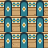
          </div>
          <div class="vue"></div>
          <p class="cap" style="margin:.9em 0 0">Zellige « étoile et croix », frises, rosaces. Dans chaque mosquée, deux carrés de lumière dessinent l’étoile à huit branches.</p>
        </div>
      </div>
      <div class="sig"><span>ISNAD · Chroniques des Compagnons</span><span class="ar" lang="ar">إسناد</span></div>
    </div>
  </article></div></div>

  <div class="cartel"><b>Planche 10 · Tribus, peuples et alliés</b><span>16:9 · 1920 × 1080</span></div>
  <div class="defile"><div class="pw"><article class="pl" data-nom="10-tribus-et-peuples">
    <div class="in">
      <p class="sur">Le monde</p>
      <h3>Des tribus, des cités, deux empires</h3>
      <p class="dit" style="max-width:none">Aucun groupe n’est un ennemi par nature. On leur parle avant tout.<span class="leg"><i>◆</i> PERSONNAGE DE FICTION</span></p>
      <div class="peuples">{{PEUPLESPLANCHE}}</div>
      <div class="sig"><span>ISNAD · Chroniques des Compagnons</span><span class="ar" lang="ar">إسناد</span></div>
    </div>
  </article></div></div>

  <div class="cartel"><b>Planche 11 · Le cœur</b><span>16:9 · 1920 × 1080</span></div>
  <div class="defile"><div class="pw"><article class="pl" data-nom="11-le-coeur">
    <div class="in">
      <p class="sur">Les œuvres, les lames, les maux</p>
      <h3>Sept œuvres, sept lames, sept maux du cœur</h3>
      <p class="dit" style="max-width:none">Une vertu pratiquée prend le fil d’une lame. Sans elle, le mal n’est que repoussé : il revient.</p>
      <div class="sept">{{SEPT}}</div>
      <div class="ciel"><span class="cap">CINQ COMPAGNONS DE LUMIÈRE, FIGURES DU CIEL</span><div>{{CIEL}}</div></div>
      <div class="sig"><span>ISNAD · Chroniques des Compagnons</span><span class="ar" lang="ar">إسناد</span></div>
    </div>
  </article></div></div>

  <div class="cartel"><b>Planche 12 · L’équipement</b><span>16:9 · 1920 × 1080</span></div>
  <div class="defile"><div class="pw"><article class="pl" data-nom="12-equipement">
    <div class="in">
      <p class="sur">Armes, boucliers, coiffes, tenues</p>
      <h3>{{NPIECES}} pièces, quatre emplacements</h3>
      <p class="dit" style="max-width:none">Des objets ordinaires de l’époque, sans relique ni inscription. Le fer aide à tenir ; il ne remplace pas le cœur.</p>
      <div class="arsenal">{{ARSENAL}}</div>
      <div class="portes"><span class="cap">EN COMBAT, ON VOIT CE QUE L’ON PORTE</span><div>{{TENUESPLANCHE}}</div><span class="cap">LES GENS D’ARMES NE SE RESSEMBLENT PLUS</span><div class="tr">{{TROUPE}}</div></div>
      <div class="sig"><span>ISNAD · Chroniques des Compagnons</span><span class="ar" lang="ar">إسناد</span></div>
    </div>
  </article></div></div>

  <div class="cartel"><b>Planche 9 · Affiche verticale</b><span>4:5 · 1080 × 1350</span></div>
  <div class="pw haut"><article class="pl haut p-affiche" data-nom="09-affiche-verticale">
    
    <div class="ombre"></div>
    <div class="in">
      <div class="ar nom" lang="ar" dir="rtl" style="text-align:left">إسناد</div>
      <div class="logo">ISNAD</div>
      <div class="sous">Chroniques des Compagnons</div>
      <p class="dit">Savoir de qui l’on tient ce que l’on sait.</p>
      <p class="quoi">JEU DE RÔLE AU TOUR PAR TOUR · CINQ SAGAS · DANS LE NAVIGATEUR</p>
    </div>
    <div class="sceaux">{{SCEAUX}}</div>
  </article></div>

</div></div></section>

<footer class="pied gout"><div class="col">
  <p>ISNAD · Chroniques des Compagnons. Livret du joueur et planches de présentation.</p>
  <p>Les écrans sont des captures du jeu. Les veillées de la Citadelle et les rencontres de la Cité-Miroir sont une fiction. La musique est originale.</p>
</div></footer>
